TongHopTin
Tong hop tin tuc - 2026-05-26
Điều Mỹ chờ suốt 6 tháng từ Trung Quốc cuối cùng vẫn chưa xảy ra: Bắc Kinh toan tính gì? 🔗 MOI
TIN MỚI Mỹ rao bán chip 6 tháng vẫn ế Khi Tổng thống Mỹ Donald Trump tuyên bố vào cuối năm ngoái rằng Nvidia có thể bán một trong những con chip mạnh nhất của mình cho Trung Quốc, thỏa thuận này từng
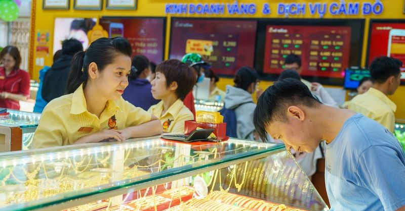
Giá vàng hôm nay 26/5/2026 phi lên mốc 4.600 USD/ounce, trong nước bứt phá 🔗 MOI
Giá vàng thế giới hôm nay 26/5/2026 Sáng nay, giá vàng thế giới vượt 4.573 USD/ounce, hướng đến mốc 4.600 USD/ounce. Lúc 23h ngày 25/5 (giờ Việt Nam), giá vàng thế giới giao dịch ở mức 4.570 USD/ounce
Ông Lavrov điện đàm ông Rubio, thông báo kế hoạch Nga tấn công Kiev 🔗 MOI
(PLO)- Ngoại trưởng Nga Sergey Lavrov điện đàm với Ngoại trưởng Mỹ Marco Rubio, nói rằng sẽ bắt đầu các cuộc tấn công vào các “trung tâm ra quyết định” ở Kiev và kêu gọi Mỹ “bảo đảm sơ tán nhân viên n
Xung đột Iran thách thức tham vọng trung tâm AI của vùng Vịnh 🔗 MOI
Những năm gần đây, các quốc gia vùng Vịnh xem công nghệ tiên tiến là trụ cột cốt lõi của kế hoạch đa dạng hóa nền kinh tế. Trong đó, nguồn năng lượng hóa thạch dồi dào, năng lực phát điện quy mô lớn v
Tổng thống Mỹ Trump bất ngờ ra điều kiện với các nước Trung Đông 🔗 MOI
Tổng thống Mỹ Donald Trump. (Ảnh: Reuters) Tổng thống Trump xác nhận ông đã nói chuyện với lãnh đạo các quốc gia trên, cùng Ả-rập Xê-út và Bahrain về một loạt các thỏa thuận nhằm bình thường hóa quan
Tin tức thế giới 26-5: Giá dầu giảm mạnh; Nga sắp tấn công quy mô lớn vào Ukraine? 🔗 MOI
Một trung tâm thương mại bốc cháy sau cuộc tấn công của Nga vào thủ đô Kiev của Ukraine ngày 24-5 - Ảnh: AP Nga cảnh báo mở đợt tấn công mới vào Kiev, kêu gọi người nước ngoài rời đi Ngày 25-5, Nga tu

Phát huy vai trò chủ đạo của kinh tế nhà nước trong kỷ nguyên mới 🔗 MOI
Kinh tế Thay vì dựa trên quy mô sở hữu, bài viết phân tích vai trò của kinh tế nhà nước trong nền kinh tế Việt Nam theo cách tiếp cận chức năng: ổn định kinh tế vĩ mô, định hướng phát triển và thiết l

Một nền kinh tế hiện đại không đo bằng tỷ lệ người dân sở hữu nhà cao hay thấp 🔗 MOI
Bài 1: Nhà ở không được bán trong 3 năm đầu: Hà Nội làm đô thị đa mục tiêu, lợi cho ai? Bài 2: Làm dự án nhà cho thuê trăm thứ khó: Nhà đầu tư hiến kế 'thóc ở đâu bồ câu ở đấy' Sự chuyển dịch lớn tron
Giá vàng hôm nay 26-5: Bật tăng trở lại 🔗 MOI
Giá vàng hôm nay tăng trở lại Khoảng 6 giờ ngày 26-5 (giờ Việt Nam), giá vàng hôm nay trên thị trường quốc tế dao động quanh mức 4.571 USD/ounce, tăng 38 USD so với mức thấp nhất trong phiên đêm qua l
Thủ tướng Israel than vãn bị ông Trump gạt ra rìa trong đàm phán với Iran 🔗 MOI
Ông Trump họp báo chung cùng ông Netanyahu ngày 29-12-2025 - Ảnh: REUTERS Ngày 25-5, Hãng tin Reuters dẫn các nguồn tin quan chức cho biết trong các cuộc trao đổi với những người thân cận, Thủ tướng B

Dự thảo văn kiện Đại hội XIV của Đảng: Nhìn từ lăng kính kinh tế - tài chính 🔗 MOI
Thời sự Dự thảo Báo cáo chính trị trình Đại hội XIV của Đảng đặt mục tiêu tăng trưởng GDP giai đoạn 2026–2030 đạt từ 10%/năm trở lên với định hướng rõ ràng chuyển đổi mô hình tăng trưởng dựa vào khoa
Doanh thu một năm hơn 41 tỉ đồng, bar Revo ở Vũng Tàu chỉ kê khai hơn 6 tỉ 🔗 MOI
Chủ quán bar Revo - Đặng Tuấn Vũ (áo nâu) và hai đồng phạm - Ảnh: Công an TP.HCM Ngày 25-5, Công an TP.HCM cho biết từ việc kiểm tra quán bar Revo (số 15-15A Lý Tự Trọng, phường Vũng Tàu) đã truy xét
Trung Quốc cấp 'căn cước' cho robot hình người 🔗 MOI
Robot cảnh sát hình người xuất hiện trên một tuyến phố ở thành phố Hàng Châu, tỉnh Chiết Giang, miền đông Trung Quốc tham gia điều tiết giao thông ngày 3-5 - Ảnh: AFP Theo báo SCMP ngày 25-5, Trung Qu

Đổi mới mô hình tăng trưởng gắn với tái cơ cấu nền kinh tế trong giai đoạn mới 🔗 MOI
Pháp luật Triển khai Nghị quyết số 07-NQ/TW ngày 18/11/2016 của Bộ Chính trị về chủ trương, giải pháp cơ cấu lại ngân sách nhà nước, quản lý nợ công, việc cơ cấu lại ngân sách nhà nước, quản lý nợ côn

Tiếp nhận phản ánh kiến nghị của doanh nghiệp 🔗 MOI
HỌ VÀ TÊN * EMAIL * SỐ ĐIỆN THOẠI * ĐỊA CHỈ * TIÊU ĐỀ * FILES ĐÍNH KÈM NỘI DUNG * RadEditor - HTML WYSIWYG Editor. MS Word-like content editing experience thanks to a rich set of formatting tools, dro
Nhiều 'điểm mờ' trong thỏa thuận Mỹ - Iran 🔗 MOI
Hôm qua, truyền thông quốc tế dẫn lời Tổng thống Iran Masoud Pezeshkian cho biết Tehran sẵn sàng đảm bảo với thế giới rằng họ không tìm kiếm vũ khí hạt nhân . Hai bên chưa vội ? "Chúng tôi không tìm k
Kỳ vọng lớn về hoà bình Mỹ-Iran 🔗 MOI
(PLO)- Những tín hiệu đồng loạt từ Mỹ, Iran và Pakistan đang cho thấy cánh cửa hòa bình Trung Đông có thể đang dần mở ra. Những tín hiệu ngoại giao dồn dập từ Mỹ, Iran và Pakistan cuối tuần qua làm tă
Vụ dùng súng cướp ngân hàng ở Gia Lai: Xét xử ‘Tài đen’ cùng đồng phạm 🔗 MOI
Sáng nay (26.5), TAND tỉnh Gia Lai sẽ mở phiên tòa xét xử 2 bị cáo gây ra vụ cướp ngân hàng từng gây xôn xao dư luận hồi đầu năm 2026. Theo đó, Phạm Anh Tài (biệt danh Tài "đen", 36 tuổi, ở phường Kon
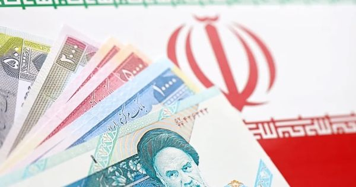
Điểm nóng xung đột ngày 26-5: Hé lộ trở ngại chặn đường thỏa thuận hòa bình Mỹ - Iran 🔗 MOI
Khoản tài sản trị giá 12 tỉ USD nói trên đang được giữ tại Qatar. Theo thông tin từ tờ The Jerusalem Post ngày 25-5, dẫn nguồn tin am hiểu về các cuộc đàm phán, yêu cầu tài chính này từ phía Tehran hi
'Xe điện giờ không lo về tầm hoạt động nữa mà lo sạc quá nhanh, chưa kịp uống xong nước đã phải đi' 🔗 MOI
Volvo cho rằng công nghệ sạc siêu nhanh đang khiến nhiều tài xế chi quá nhiều tiền cho quãng đường mà thực tế họ không cần đến - Ảnh minh họa: InsideEVs "Nỗi lo hết pin" từng là một trong những rào cả

Chủ xe hybrid sạc điện bị chỉ trích 'không sạch' vì lười cắm điện, Toyota cho thấy điều ngược lại 🔗 MOI
Hóa ra chủ xe PHEV không lười cắm sạc, mà phụ thuộc vào việc họ sống ở đâu và sở hữu xe dưới hình thức nào - Ảnh: Toyota Trong nhiều năm qua, xe hybrid sạc điện (PHEV) thường bị hoài nghi về hiệu quả
Sóng IPO 40 tỉ USD đã tới, tiền ở đâu để hấp thụ? 🔗 MOI
Thị trường trước làn sóng IPO 40 tỉ USD - Ảnh: HỮU HẠNH Sóng IPO 40 tỉ USD và bài toán "con gà - quả trứng" Theo dự báo của Dragon Capital, làn sóng IPO giai đoạn 2026-2028 có thể đạt khoảng 40 tỉ USD
Ông Trump lên tiếng khi thỏa thuận với Iran bị coi là 'ác mộng của Israel' 🔗 MOI
Tổng thống Mỹ Donald Trump nói đàm phán với Iran vẫn đang diễn ra theo ý ông muốn - Ảnh: AFP Tổng thống Donald Trump ngày 24-5, giờ địa phương, cho biết chỉ thị các nhà đàm phán với Iran "không được v

Khơi thông các động lực tăng trưởng kinh tế Việt Nam 🔗 MOI
Pháp luật Nhờ sự phối hợp đồng bộ của chính sách tài khóa và tiền tệ trong việc thúc đẩy cầu trong nước, kinh tế Việt Nam năm 2025 phục hồi mạnh, với tăng trưởng vượt mục tiêu đề ra. Về ổn định kinh t
Mở ra giai đoạn mới cho quan hệ Việt Nam - Singapore 🔗 MOI
Chuyến thăm cấp Nhà nước tới Singapore của Tổng Bí thư, Chủ tịch nước Tô Lâm được kỳ vọng sẽ thúc đẩy hợp tác kinh tế, mở rộng đầu tư và nâng tầm quan hệ Việt Nam – Singapore. Tổng Bí thư, Chủ tịch nư
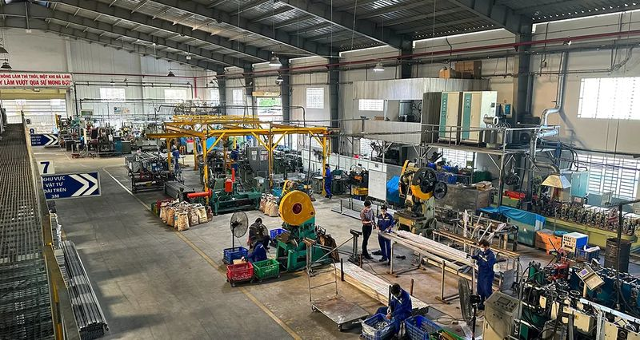
Doanh nghiệp loay hoay chọn hướng chuyển đổi số 🔗 MOI
Giảm 30% nhân sự nhưng năng suất tăng 50% Năm 2022, Công ty CP Sản xuất thiết bị điện công nghiệp Cát Vạn Lợi (phường Gò Vấp, TPHCM) tham gia chương trình phát triển nhà máy thông minh do Bộ Công thươ
Mỹ tiếp tục tìm cách chấm dứt quy định đổi giờ hai lần mỗi năm 🔗 MOI
Ủy ban Năng lượng và Thương mại Hạ viện Mỹ hôm 21/5 thông qua Dự luật Bảo vệ Ánh dương với 48 phiếu thuận và một phiếu chống, nhằm áp dụng quy ước "giờ mùa hè" quanh năm, chấm dứt việc người Mỹ phải đ
Con trai cả tỉ phú Phạm Nhật Vượng làm Chủ tịch VinFast 🔗 MOI
Ông Phạm Nhật Quân Anh (giữa) trong lần xuất hiện cùng cha - Ảnh: NGUYỄN KHÁNH VinFast Auto Ltd. vừa công bố quyết định bổ nhiệm ông Phạm Nhật Quân Anh giữ chức Chủ tịch hội đồng quản trị của VinFast.
Năng lượng & Khoáng sản 🔗 MOI
Ngày 9/4, Ủy ban Thường vụ Quốc hội đã cho ý kiến về dự thảo Nghị quyết của Quốc hội về việc ban hành một số quy định về thuế bảo vệ môi trường, thuế giá trị gia tăng, thuế tiêu thụ đặc biệt đối v

Khu Công nghiệp, Khu Kinh tế 🔗 MOI
Chi phí tuân thủ vẫn là nỗi lo của doanh nghiệp trong nhiều năm qua. Tuy nhiên, thời gian tới, vấn đề này sẽ được giải quyết một cách triệt để hơn theo đúng chỉ đạo từ Kết luận số 18-KL/TW của Ban Chấ
Ông Trump đòi Tehran bàn giao uranium, Iran tuyên bố hạ UAV ở Vịnh Ba Tư 🔗 MOI
Hãng thông tấn Al Jazeera dẫn bài đăng trên mạng Truth Social của ông Donald Trump viết: “Số uranium đã làm giàu, tức bụi phóng xạ, hoặc sẽ lập tức được bàn giao cho Mỹ để chúng tôi tiêu hủy hoặc phía
Tới lượt Tổng giám đốc Nhiệt điện Hải Phòng bị khởi tố: Vốn hóa hơn 5.200 tỷ, nhiều ngày sụt giảm 🔗 MOI
Loạt lãnh đạo doanh nghiệp điện vướng vòng tố tụng Làn sóng biến động đang phủ bóng lên nhóm doanh nghiệp điện và xây lắp điện trên thị trường chứng khoán khi hàng loạt lãnh đạo doanh nghiệp bị khởi t
Nga khuyến cáo người nước ngoài rời Kiev, tuyên bố thay đổi chiến lược ở Ukraine 🔗 MOI
(Ảnh: Tass) Trong tuyên bố đưa ra ngày 25/5, Bộ Ngoại giao Nga gọi vụ tấn công của Ukraine vào ký túc xá trường cao đẳng nghề ở Cộng hoà Nhân dân tự xưng Lugansk là “giọt nước tràn ly” đối với Mátxcơv
Châu Âu có thể đối diện giá dầu khí ở mức cao đến cuối 2027 🔗 MOI
Nhận định được các nhà lãnh đạo Liên minh châu Âu (EU) đưa ra trong khuôn khổ cuộc họp các bộ trưởng tài chính EU (Eurogroup) tại Lefkosia (Cyprus) tuần qua. Đầu 2026, dầu Brent bắt đầu được giao dịch
Chuyển sang dùng xăng E10, trong bình còn xăng RON 95 có rút cạn bỏ xăng cũ không? 🔗 MOI
Theo TS Cao Đào Nam, xăng E10 có những ưu điểm đáng kể nhưng việc sử dụng, nhất là với xe đời cũ, cần lưu ý một số vấn đề để sử dụng an toàn. E10 là loại nhiên liệu chứa tối đa 10% ethanol và khoảng 9
Cổ phiếu dầu khí bị bán tháo, VN-Index vẫn hồi phục gần 9 điểm 🔗 MOI
Bảng điện phiên giao dịch 25-5 phủ sắc xanh - Dữ liệu: VSF VN-Index hồi phục trở lại Kết phiên ngày 25-5, VN-Index tăng 8,9 điểm lên 1.886,03 điểm, tương ứng tăng 0,47%, HNX-Index tăng 4,29 điểm lên 2
Chưa xong với Iran, ông Trump đã kêu gọi khối Trung Đông bắt tay với Israel 🔗 MOI
Tổng thống Mỹ Donald Trump - Ảnh: AP Ngày 25-5, Tổng thống Mỹ Donald Trump đăng bài viết dài trên mạng xã hội Truth Social, cập nhật tiến trình đàm phán với Iran và cho rằng các nước Trung Đông nên th

Kiến tạo không gian phát triển mới cho kinh tế tập thể 🔗 MOI
Pháp luật Trong giai đoạn 2021-2025, dựa vào mục tiêu phát triển, điều kiện ngân sách và nhu cầu hỗ trợ, năng lực của các hợp tác xã, Thủ tướng Chính phủ đã ban hành Chương trình hỗ trợ phát triển kin

Sắt thép là hàng xuất khẩu chủ lực sang Indonesia 4 tháng đầu năm 🔗 MOI
Lực kéo từ nhóm hàng sắt thép và nguyên liệu công nghiệp đã giúp tổng kim ngạch xuất nhập khẩu Việt Nam - Indonesia đạt hơn 6,07 tỷ USD trong 4 tháng đầu năm 2026, tăng gần 7% so với cùng kỳ năm 2025.

Nhìn lại 1 năm thực thi Nghị quyết 68-NQ/TW 🔗 MOI
Doanh nghiệp Sau 1 năm triển khai Nghị quyết số 68-NQ/TW, nhiều doanh nghiệp công nghệ Việt ghi nhận những chuyển biến tích cực từ môi trường kinh doanh, cơ chế hỗ trợ và tư duy điều hành theo hướng k
Tạp chí Kinh tế Sài Gòn 🔗 MOI
Kinh tế Sài Gòn giữ bản quyền nội dung của trang web thesaigontimes.vn. Không sử dụng lại nội dung trên trang này dưới mọi hình thức, trừ khi được Kinh tế Sài Gòn đồng ý bằng văn bản. Trang ngoài sẽ đ
Tạp chí Kinh tế Sài Gòn 🔗 MOI
Kinh tế Sài Gòn giữ bản quyền nội dung của trang web thesaigontimes.vn. Không sử dụng lại nội dung trên trang này dưới mọi hình thức, trừ khi được Kinh tế Sài Gòn đồng ý bằng văn bản. Trang ngoài sẽ đ
Tạp chí Kinh tế Sài Gòn 🔗 MOI
Kinh tế Sài Gòn giữ bản quyền nội dung của trang web thesaigontimes.vn. Không sử dụng lại nội dung trên trang này dưới mọi hình thức, trừ khi được Kinh tế Sài Gòn đồng ý bằng văn bản. Trang ngoài sẽ đ
Tạp chí Kinh tế Sài Gòn 🔗 MOI
Kinh tế Sài Gòn giữ bản quyền nội dung của trang web thesaigontimes.vn. Không sử dụng lại nội dung trên trang này dưới mọi hình thức, trừ khi được Kinh tế Sài Gòn đồng ý bằng văn bản. Trang ngoài sẽ đ
Thông điệp “2 Bật - 3 Tắt” sử dụng điện tiết kiệm, hiệu quả 🔗 MOI
Facebook Twitter Lưu bài viết Bản in Copy link Ngày 26 và ngày 27/5/2026, Hà Nội tiếp tục nắng nóng gay gắt và đặc biệt gay gắt. Đợt nắng nóng gay gắt đang khiến nhu cầu sử dụng điện tăng đột biến trê
Ngân hàng bán đấu giá xe chở tiền, giá khởi điểm từ 61 triệu đồng 🔗 MOI
Cụ thể, VietinBank Tây Ninh bán đấu giá một lô tài sản gồm: 1 xe ô tô chuyên dùng Pajero, nhãn hiệu Mitsubishi, sản xuất năm 2004 tại Nhật Bản. Giá khởi điểm (đã bao gồm thuế VAT) là 61 triệu đồng. 1
[Video] Israel đối mặt với thách thức khi muốn can dự vào đàm phán Mỹ - Iran 🔗 MOI
Thủ tướng Israel Benjamin Netanyahu được cho là thừa nhận khả năng ảnh hưởng hạn chế đối với lập trường của Tổng thống Mỹ Donald Trump trong hồ sơ Iran. Trong khi Washington và Tehran thúc đẩy các bướ
Iran và Mỹ tiến gần tới thỏa thuận ngừng bắn 🔗 MOI
Tuy nhiên, đến ngày 24/5, hai bên chưa ký thỏa thuận chính thức và hiện chưa rõ mức độ ràng buộc của khuôn khổ này. Một nhà ngoại giao tiết lộ đề xuất mới nhất đang chờ Iran phê chuẩn. Theo đó, sau kh
Điện sinh hoạt có 'gánh' giờ cao điểm? 🔗 MOI
Người dùng lo hóa đơn tiền điện tăng kép Công ty Vận hành hệ thống điện và thị trường điện quốc gia (NSMO) mới đây đề xuất áp dụng khung giờ cao điểm mới từ 17 giờ 30 - 22 giờ 30, từ thứ hai đến thứ b
Thủ phạm gây ra 13.000 ca tử vong và thiệt hại gần 8 tỷ USD tại Đông Nam Á 🔗 MOI
Facebook Twitter Lưu bài viết Bản in Copy link Sự thay đổi mục đích sử dụng đất tại Đông Nam Á trong 15 năm qua đang làm chất lượng không khí ngày càng tồi tệ, góp phần gây ra hàng ngàn ca tử vong sớm
Minh bạch hoạt động huy động vốn 🔗 MOI
Trước dấu hiệu một số ngân hàng thương mại tăng lãi suất huy động trở lại, Ngân hàng Nhà nước (NHNN) đang phát đi thông điệp quyết liệt về việc ổn định mặt bằng lãi suất nhằm hỗ trợ phục hồi kinh tế v
Thị trường vốn và Trung tâm tài chính: Mắt xích kết nối dòng vốn toàn cầu 🔗 MOI
Facebook Twitter Lưu bài viết Bản in Copy link Để đạt được tốc độ tăng trưởng kinh tế hai con số, Việt Nam không thể chỉ dựa vào “bầu sữa” tín dụng ngắn hạn từ ngân hàng. Thực tế lịch sử của các "con
Hồ sơ học tập suốt đời: Ai chịu trách nhiệm khi dữ liệu bị lộ? 🔗 MOI
Phần lớn thông tin về Nghị định 88/2026 (NĐ 88) đang được nhìn dưới góc độ tiện ích. Học bạ và bằng cấp nằm gọn trong điện thoại, có giá trị pháp lý tương đương bản giấy, người dân không còn phải xin
Nam diễn viên chuyên vai đểu các phim trên VTV ngoài đời là Trung tá công an 🔗 MOI
Hồng Quân là nghệ sĩ quen thuộc trên màn ảnh hàng chục năm qua. Tuy nhiên các vai diễn của anh chủ yếu là vai phản diện thuộc tuyến phụ nên khán giả dù đã quá quen mặt nhưng ít biết tên anh. NSƯT Hồng
Ai là nữ bộ trưởng của 2 bộ, được gọi là 'sứ giả hòa bình' của Việt Nam? 🔗 MOI
1. Nhân vật nào dưới đây từng là nữ bộ trưởng của hai bộ khác nhau và được gọi là “sứ giả hòa bình” của Việt Nam? Bà Nguyễn Thị Định 0% Bà Nguyễn Thị Bình 0% Bà Trương Mỹ Hoa 0% Chính xác Bà Nguyễn Th
Mỹ trì hoãn giao tên lửa Tomahawk cho Nhật Bản vì lo ngại cạn kiệt kho vũ khí 🔗 MOI
Chào mừng quý độc giả và thính giả đến với Bản tin Thế giới – chuyên mục podcast thời sự quốc tế hàng ngày trên Báo Điện tử VietnamPlus. Tại đây, chúng tôi cập nhật nhanh nhất những diễn biến nổi bậ
Dự trữ dầu toàn cầu lao dốc 🔗 MOI
Thị trường dầu mỏ toàn cầu đã rơi vào trạng thái căng thẳng kể từ khi xung đột Trung Đông nổ ra vào cuối tháng 2, khiến hoạt động vận tải qua eo biển Hormuz bị gián đoạn, từ đó làm sụt giảm nghiêm trọ
Nga sắp ra tuyên bố đặc biệt về cách tấn công Ukraine 🔗 MOI
Người phát ngôn Bộ Ngoại giao Nga Maria Zakharova - Ảnh: TASS Chiều tối 25-5, Hãng thông tấn Tass của Nga tường thuật: Người phát ngôn Bộ Ngoại giao Nga Maria Zakharova cho biết cơ quan này sẽ sớm phá

Chuyên đề Agribank 🔗 MOI
Trước áp lực thực thi Nghị định số 70/2025/NĐ-CP về hóa đơn điện tử và quản lý thuế, Agribank tổ chức hội nghị tập huấn toàn quốc, thống nhất quy trình hỗ trợ và giới thiệu gói giải pháp số dành riêng

TỔNG QUAN TỔNG QUAN KINH TẾ 🔗 MOI
Kinh tế Hoạt động điều hành chính sách tài khóa năm 2025 diễn ra trong bối cảnh tình hình kinh tế trong nước và quốc tế tiếp tục diễn biến phức tạp, căng thẳng thương mại toàn cầu gia tăng, đặc biệt l

Tiếp nhận phản ánh kiến nghị của công dân 🔗 MOI
HỌ VÀ TÊN * EMAIL * SỐ ĐIỆN THOẠI * ĐỊA CHỈ * TIÊU ĐỀ * FILES ĐÍNH KÈM NỘI DUNG * RadEditor - HTML WYSIWYG Editor. MS Word-like content editing experience thanks to a rich set of formatting tools, dro
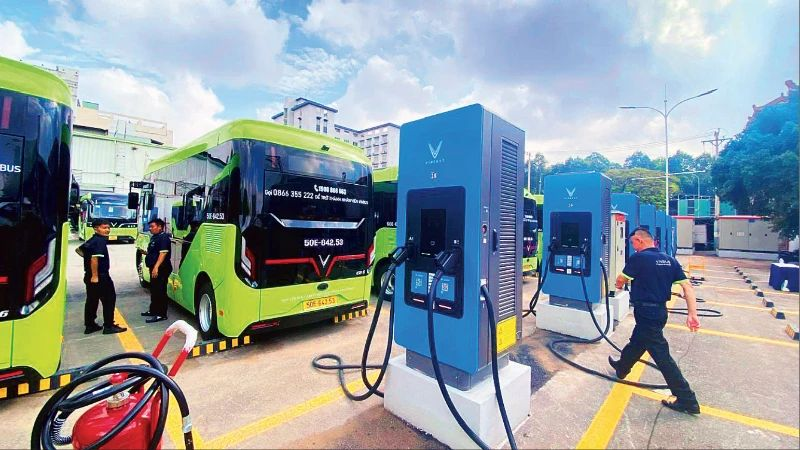
Tạo đột phá từ phát triển giao thông xanh 🔗 MOI
Chủ trương thực hiện mục tiêu phát thải ròng bằng “0” (Net Zero) trong lĩnh vực giao thông vận tải đang được chính quyền Thành phố Hồ Chí Minh triển khai quyết liệt, có lộ trình và ưu tiên nguồn lực r
Giá bạc hôm nay 26/5/2026 tăng vọt, bạc trong nước diễn biến trái chiều 🔗 MOI
Giá bạc trong nước hôm nay 26/5/2026 Kết thúc ngày giao dịch 25/5, Công ty TNHH MTV Vàng bạc Đá quý Ngân hàng Sài Gòn Thương Tín (Sacombank - SBJ) niêm yết bạc miếng Kim Phúc Lộc loại 1 lượng ở mức 2,
Bỉ tính mượn thủ môn người Mỹ để tập tại World Cup 🔗 MOI
Tuyển Bỉ đã đăng ký ba thủ môn chính thức cho World Cup 2026 gồm Thibaut Courtois (Real Madrid), Senne Lammens (Man Utd) và Mike Penders (Chelsea). Ban huấn luyện còn dự định đưa Vandevoordt sang Mỹ n
Chiến lược giảm rủi ro 🔗 MOI
Sự chuyển dịch này không phải là nhất thời, mà là một bước đi chiến lược dài hạn nhằm định vị lại vai trò của châu Âu trên bàn cờ địa - chính trị quốc tế. Trong một số phát biểu hồi tuần trước, giới c
Lý do vàng không bị han gỉ 🔗 MOI
Khối vàng nặng 63,8 g tìm thấy ở Alaska, Mỹ. Ảnh: Robert M. Lavinsky/Wikipedia Trong nghiên cứu công bố hôm 21/5 trên tạp chí Physical Review Letters , hai nhà hóa học máy tính Santu Biswas và Matthew
Báo in ngày 26-5: Tính toán "né" giờ cao điểm sử dụng điện 🔗 MOI
Báo Người Lao Động số ra ngày 26-5-2026. Mời bạn đọc đăng ký gói đọc Báo Người Lao Động E-Paper tại đây . Ngoài ra, báo in Người Lao Động số ra ngày 26-5 còn nhiều bài viết đặc sắc khác dành cho bạn đ

Ấn phẩm 🔗 MOI
Tạp chí Kinh tế - Tài chính Online. Cơ quan chủ quản: Bộ Tài chính Giấy phép xuất bản số: 107/GP-BVHTTDL ngày 26/8/2025. Tạp chí Kinh tế - Tài chính Online: e-ISSN 3093-3498.
Singapore muốn mở rộng nhập khẩu gạo từ Việt Nam 🔗 MOI
Đại sứ Singapore tại Việt Nam Rajpal Singh đánh giá cao vai trò của Việt Nam trong bảo đảm an ninh lương thực khu vực và cho biết Singapore mong muốn tăng sản lượng gạo nhập khẩu từ Việt Nam. Sáng ngà

Báo cáo tài chính doanh nghiệp 🔗 MOI
Lợi nhuận của PC1 trong quý đầu năm 2026 tăng trưởng mạnh so với cùng kỳ năm trước, nhờ dự án bất động sản Tháp Vàng và thanh lý khoản đầu tư vào công ty liên kết.

Chính phủ với doanh nghiệp 🔗 MOI
20/03/2026 (Chinhphu.vn) - Chính phủ ban hành Nghị quyết số 11/2026/NQ-CP về chi phí tiền lương Ngân hàng thương mại TNHH một thành viên Xây dựng Việt Nam, Ngân... 04/03/2026 (Chinhphu.vn) - Chính phủ
Xác định rõ mục tiêu phát triển khoa học cơ bản trong giai đoạn mới 🔗 MOI
Tổng Bí thư, Chủ tịch nước Tô Lâm nhấn mạnh yêu cầu cấp thiết phải xác định rõ mục tiêu phát triển khoa học cơ bản, nhằm tháo gỡ các điểm nghẽn trước mắt và kiến tạo nền tảng tri thức lâu dài. Tổng Bí
Thụy Điển: Xe buýt tự lái va chạm với tàu điện ngay trong ngày đầu chở khách 🔗 MOI
Người phát ngôn Vasttrafik, ông Patrik Chi, cho biết chiếc xe đã được tạm ngừng hoạt động để kiểm tra. Theo ông, chiếc xe buýt tự lái đang chở hành khách tại Gothenburg đã phanh lại trước khi bị tàu đ
Đà Nẵng siết giám sát bất động sản, ngăn hình thành 'sân sau' 🔗 MOI
Chiều 25.5, Ban Chỉ đạo về chính sách nhà ở và thị trường bất động sản TP.Đà Nẵng (Ban Chỉ đạo) tổ chức phiên họp thứ nhất dưới sự chủ trì của ông Lê Ngọc Quang, Bí thư Thành ủy Đà Nẵng , Trưởng đoàn
Cú 'lật kèo' để bán đất giá gấp 100 lần của đại gia Đinh Trường Chinh 🔗 MOI
Cáo trạng của VKSND TP HCM vừa hoàn tất xác định hành vi này xảy ra tại Dự án Khu đô thị An Phú - An Khánh do Công ty Cổ phần Phát triển và Kinh doanh nhà (HDTC) làm chủ đầu tư. HDTC tiền thân là doan
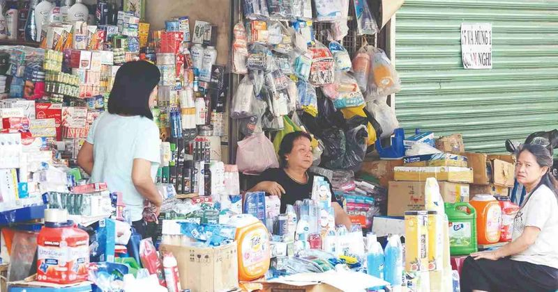
Giảm chi phí tuân thủ cho hộ kinh doanh 🔗 MOI
Câu chuyện của bà Nguyện, tiểu thương tại chợ An Đông (TPHCM), là một ví dụ. Ngồi bên sạp hàng ế ẩm, bà thở dài khi nhắc đến bộ máy móc và phần mềm đã mua hồi năm ngoái để xuất hóa đơn điện tử. Không
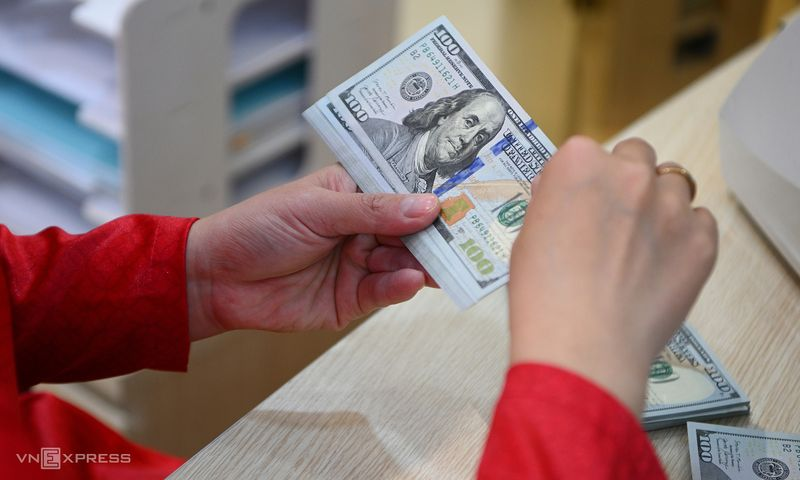
Giới ngân hàng sợ tiền gửi của người dân 'chảy' qua stablecoin 🔗 MOI
Đạo luật Clarity (dự luật của Mỹ nhằm thiết lập khuôn khổ pháp lý toàn diện cho thị trường tài sản số) đã được Hạ viện Mỹ thông qua và gần đây cũng vượt qua Ủy ban Ngân hàng Thượng viện với tỷ lệ ủng

Lựa chọn một chiều 🔗 MOI
Với một số cá nhân đồng thuận, thì việc sử dụng xăng sinh học đương nhiên là tốt đối với môi trường, đó là hiệu quả tích cực nhất cho việc thay đổi nhiên liệu dùng cho các loại phương tiện hiện đại, p
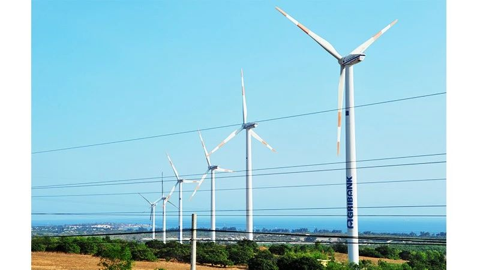
Dồn dập sóng đầu tư năng lượng tái tạo 🔗 MOI
Trong bối cảnh Việt Nam từng bước hiện thực hóa cam kết Net Zero vào năm 2050, Lâm Đồng, với lợi thế địa hình, tài nguyên và vị trí kết nối vùng, đang khẳng định vai trò là điểm trung chuyển năng lượn
Đầu tư cho con người là đầu tư chiến lược 🔗 MOI
Với Việt Nam, yêu cầu ấy càng trở nên cấp bách khi Nghị quyết Đại hội XIV của Đảng xác định khoa học-công nghệ, đổi mới sáng tạo và chuyển đổi số sẽ là động lực phát triển chủ yếu của nền kinh tế tron

Trẻ sinh ra di truyền giang mai từ mẹ có điều trị được không? 🔗 MOI
Nhạc sĩ Thanh Tùng viết ‘Lối cũ ta về’ tặng ai? 🔗 MOI
Chị Bạch Dương, con gái nhạc sĩ Thanh Tùng, chia sẻ về "di sản" của ba mình - Ảnh: ĐẬU DUNG Triển lãm Legacy of Love diễn ra từ ngày 25-5 tới hết ngày 8-6 tại Hà Nội, nằm trong chuỗi hoạt động kỷ niệm
Hai người dân ở TP.HCM giao nộp 8 con chim công quý hiếm cho kiểm lâm 🔗 MOI
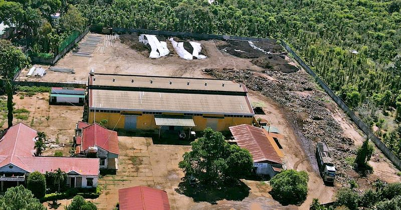
Doanh nghiệp làm phân vi sinh kiếm tiền, người dân hứng mùi hôi, ruồi muỗi 🔗 MOI
Khu sản xuất, phơi ủ phân vi sinh đặt sát quốc lộ và đường liên xã, ngay khu dân cư khiến cả khu vực ô nhiễm mùi hôi, ruồi muỗi - Ảnh: TÂM AN Ngày 25-5, ông Niê Knơng Y Sơn - Chủ tịch UBND xã Dray Bhă

Kiểm soát lạm phát trước những "biến số" cuối năm 🔗 MOI
Tài chính Tại Nghị quyết số 86/NQ-CP ngày 4/11/2025 về triển khai nhiệm vụ trọng tâm những tháng cuối năm 2025, Chính phủ tiếp tục yêu cầu về kiểm soát lạm phát, giữ vững ổn định kinh tế vĩ mô. Trong
Nắng nóng gay gắt, tiêu thụ điện miền Bắc lập kỷ lục mới 🔗 MOI
Hệ thống điện và cơ cấu huy động nguồn, phụ tải trong ngày 24-5 - Ảnh: NSMO Thông tin từ Công ty Vận hành hệ thống điện và Thị trường điện quốc gia (NSMO) vừa phát đi, cập nhật đến 17h00 ngày 25-5, cô
Xe buýt tự lái ở Thụy Điển gặp nạn ngay ngày đầu chở khách 🔗 MOI
Chiếc xe buýt tự lái gặp tai nạn va chạm với tàu điện mặt đất ở Gothenburg (Thụy Điển) ngay trong ngày đầu tiên chở khách - Ảnh: SVT Theo Hãng tin AFP, Công ty vận tải công cộng Vasttrafik của Thụy Đi
Người hâm mộ Trung Quốc phẫn nộ khi ngôi sao bóng chuyền chấn thương nặng 🔗 MOI
Wu Mengjie được xem là ngôi sao bóng chuyền nữ số một Trung Quốc hiện tại - Ảnh: IVOLLEY Đầu tháng 6 này, Trung Quốc sẽ bước vào giải đấu danh giá bậc nhất làng bóng chuyền - FIVB Nations League (thườ
Làng cờ tướng Trung Quốc tự tin 'đã tìm ra điểm yếu của Lại Lý Huynh' 🔗 MOI
Lại Lý Huynh từng gây nhiều khó khăn cho các kỳ thủ Trung Quốc - Ảnh: YCWB Trong hơn nửa năm qua, làng cờ tướng Trung Quốc đã nhiều lần thay đổi thái độ với Lại Lý Huynh - kỳ thủ lên ngôi vô địch thế
Jun Phạm, Duy Khánh, BB Trần, Neko Lê và Thanh Duy 'đúp' lại 'chông gai' mùa 2 🔗 MOI
Thanh Duy, BB Trần, Jun Phạm, Duy Khánh, Neko Lê - Ảnh: FBNV Đây có lẽ là "sít rịt" không ai ngờ đến; bởi cứ nghĩ năm Anh trai vượt ngàn chông gai này đã tốt nghiệp niên khóa K24. Jun Ph ạ m, Duy Khán
Thời tiết hôm nay 26-5: Bắc Bộ đến Huế nóng như rang, vượt 40 độ C 🔗 MOI
Hôm nay 26-5, thời tiết các tỉnh phía Bắc nắng nóng khô khốc - Ảnh: T.L Trung tâm Dự báo khí tượng thủy văn quốc gia cho biết hôm nay 26-5, thời tiết đồng bằng Bắc Bộ, Phú Thọ và từ Thanh Hóa đến TP H
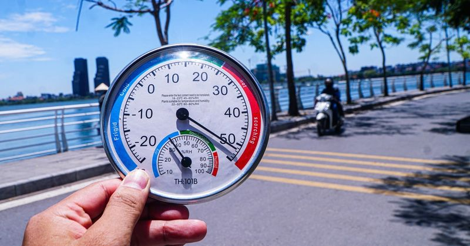
Miền Bắc còn ngột ngạt trong nắng nóng 40 độ C thêm hai ngày, sau đó có mưa 🔗 MOI
Nhiệt độ đo được trên mặt đường ở Hà Nội vượt ngưỡng 50 độ C trong ngày 25-5 - Ảnh: PHẠM TUẤN Theo Trung tâm Dự báo khí tượng thủy văn quốc gia ngày 25-5, miền Bắc và miền Trung tiếp tục trải qua một

Huy động tài chính xanh hướng tới mục tiêu phát triển bền vững 🔗 MOI
Pháp luật Chuyển đổi năng lượng xanh đã trở thành xu thế toàn cầu mang tính bắt buộc, gắn liền với mục tiêu Net Zero và yêu cầu cạnh tranh trong chuỗi cung ứng quốc tế. Trong bối cảnh đó, doanh nghiệp

Điều hành giá cả thị trường, kiểm soát lạm phát năm 2026 🔗 MOI
Pháp luật Chính sách tiền tệ và chính sách tài khóa là hai công cụ quản lý kinh tế vĩ mô quan trọng của các quốc gia. Mỗi một chính sách đều có mục tiêu riêng nhưng chung quy lại đều cùng theo đuổi mụ

Tạp chí Kinh tế Tài chính kỳ 3 tháng 4/2026 🔗 MOI

Tạp chí Kinh tế Tài chính kỳ 1 tháng 5/2026 🔗 MOI

SJC: Doanh thu chạm đáy 10 năm, lợi nhuận lập đỉnh 🔗 MOI
Dù doanh thu năm 2025 xuống mức thấp nhất thập kỷ, SJC vẫn báo lãi sau thuế hơn 425 tỷ đồng, cao nhất từ trước đến nay. Ảnh minh họa: SJC Báo cáo tài chính năm 2025 đã kiểm toán tại Công ty TNHH MTV V

Khai hội truyền thống đền Bia, tưởng niệm đại danh y, thiền sư Tuệ Tĩnh 🔗 MOI
Lễ khai hội truyền thống đền Bia năm 2026, tưởng niệm Đại danh y, Thiền sư Tuệ Tĩnh vừa được Ban Quản lý di tích Côn Sơn - Kiếp Bạc và xã Tuệ Tĩnh trang trọng tổ chức sáng 17/5 (1/4 âm lịch), tại di t

Kỷ niệm 51 năm Ngày Giải phóng miền Nam, thống nhất đất nước: Tự chủ chiến lược, kiến tạo thịnh vượng 🔗 MOI
Kinh tế Trong bối cảnh cạnh tranh thu hút đầu tư công nghệ ngày càng quyết liệt, Việt Nam đang chủ động mở cánh cửa ra thế giới để đón các “đại bàng công nghệ”, coi đây là động lực quan trọng để chuyể

Bảo vệ nhà đầu tư trước “cơn sốt” tài sản mã hóa 🔗 MOI
Chứng khoán Trong bối cảnh Việt Nam đang từng bước xây dựng khung pháp lý và chuẩn bị thí điểm thị trường tài sản mã hóa theo Nghị quyết số 05/2025/NQ-CP của Chính phủ, bài toán về an toàn hệ thống, m

Nước CHXHCN Việt Nam 🔗 MOI
© Cổng Thông tin điện tử Chính phủ Tổng Giám đốc: Nguyễn Hồng Sâm Trụ sở: 16 Lê Hồng Phong - Ba Đình - Hà Nội. Điện thoại: Văn phòng: 080 43162; Fax: 080.48924 Email: thongtinchinhphu@chinhphu.vn Bản
Miền Bắc nắng nóng đỉnh điểm trước khi đón mưa dông 🔗 MOI
Khu vực đồng bằng Bắc Bộ cùng Phú Thọ tiếp tục là trọng tâm của đợt nắng nóng lần này khi hôm nay trời nắng nóng đặc biệt gay gắt với nhiệt độ cao nhất phổ biến từ 38-40 độ, nhiều nơi vượt 40 độ. Nhiệ
Tăng cường công tác phòng, chống thiên tai trong thời gian tới 🔗 MOI
Facebook Twitter Lưu bài viết Bản in Copy link Ngày 25/5/2026, Phó Thủ tướng Hồ Quốc Dũng ký Chỉ thị số 23/CT-TTg của Thủ tướng Chính phủ về việc đẩy mạnh thực hiện Kết luận số 213-KL/TW ngày 21/11/20
Hải trình đặc biệt của những chỉ huy Hải quân tương lai 🔗 MOI
Trên hải trình đặc biệt này, Học viện Hải quân đã tổ chức luyện tập nhiều nội dung sát thực tế như thao tác buồm, huấn luyện chuyên ngành hàng hải, thiên văn xác định vị trí tàu; đồng thời thực hành b
Truyền thông Iran: Tiêm kích Mỹ tấn công xuồng IRGC, 3 thủy thủ thiệt mạng, súng nổ gần eo biển Hormuz 🔗 MOI
(PLO)- Truyền thông Iran đưa tin tiêm kích Mỹ tấn công xuồng của Lực lượng Vệ binh Cách mạng Hồi giáo Iran (IRGC) gần eo biển Hormuz, khiến ít nhất 3 thủy thủ thiệt mạng, trong lúc nhiều tiếng nổ vang
Nở rộ dịch vụ stylist cá nhân dành cho dân văn phòng 🔗 MOI
Sau khi sinh con hai năm trước, chị Diệu Ngữ, 35 tuổi, quản lý một spa tại TP HCM, nhận thấy hình ảnh cá nhân trở nên đơn điệu. Chị mua sắm nhiều quần áo hơn, từ hàng chục chiếc váy liền đủ màu và họa
Người đàn ông Mỹ mê món Việt suốt 14 năm, trữ đầy nước mắm, mắm tôm trong bếp 🔗 MOI
Tới thăm căn bếp của gia đình ông Richie Crider (55 tuổi, Washington, Mỹ), nhiều người không khỏi ngạc nhiên khi thấy đầy ắp các loại gia vị Việt Nam như: nước mắm, mắm tôm, gừng, sả, nước sốt bò kho,
Chuyện nghệ sĩ Thành Lộc, Ốc Thanh Vân bị cắt cảnh và nỗi khổ của nhà sản xuất 🔗 MOI
Giới điện ảnh Việt gần đây rộ lên câu chuyện một số diễn viên chia sẻ các phân cảnh mình đóng trong phim bị cắt. Buồn, hụt hẫng, bức xúc… là cảm xúc chung của họ khi thành quả vai diễn ra mắt không nh
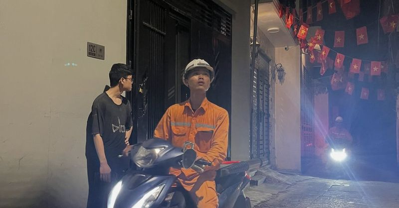
Mất điện Hà Nội đêm 25 / 5: Nhiệt độ 40 độ , cư dân không ngủ 🔗 MOI
"Đêm trắng" của người Hà Nội: 40 độ ngoài trời, mất điện trong nhà, nhà nghỉ cháy phòng Đồng An | 26/05/2026 06:00 AM | Xã hội Theo dõi Cafebiz.vn trên Đêm 25/5, một bộ phận lớn cư dân Hà Nội đã trải
[Video] Iran khẳng định không thu phí quá cảnh tại Eo biển Hormuz 🔗 MOI
Tehran cho rằng các khoản phí hiện nay chỉ phục vụ hoạt động dẫn đường, bảo vệ môi trường và duy trì an ninh hàng hải tại eo biển Hormuz. Trong khi đó, Mỹ tiếp tục phản đối mọi cơ chế hạn chế tự do hà
TPHCM xây dựng hệ thống quản lý sức khỏe toàn dân 🔗 MOI
Hơn 2.500 tỷ đồng khám sức khỏe miễn phí Theo PGS-TS-BS Nguyễn Anh Dũng, Phó Giám đốc Sở Y tế TPHCM, thành phố đang triển khai kế hoạch khám sức khỏe định kỳ cho người dân, với mục tiêu mỗi người dân
'Chim ưng biển' Osprey của Mỹ diễn tập tại thủ đô Venezuela 🔗 MOI
Đài RT ngày 24/5 đưa tin quân đội Mỹ mới đây đã công bố đoạn video ghi lại cảnh các máy bay MV-22B Osprey tiến hành diễn tập tại Caracas, đánh dấu cuộc tập trận đầu tiên của các lực lượng Washington t
Tây Hồ sắp thu hồi hơn 96ha đất, triển khai hàng loạt dự án quanh hồ Tây 🔗 MOI
Theo danh mục 3.133 công trình, dự án cần thu hồi đất giai đoạn 2026-2030 của Hà Nội, trên địa bàn phường Tây Hồ có 50 dự án thuộc diện thu hồi đất. Trong đó, các dự án sử dụng vốn ngân sách chiếm đa
Iran hé lộ nội dung đàm phán với Mỹ tại Qatar 🔗 MOI
Facebook Twitter Lưu bài viết Bản in Copy link Theo phóng viên TTXVN tại Cairo, phát biểu với báo chí ngày 25/5, người phát ngôn Bộ Ngoại giao Iran Esmaeil Baghaei cho biết cuộc đàm phán gián tiếp với
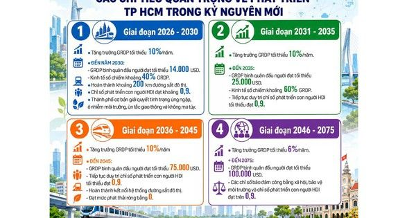
Nghị quyết 09 mở đường cho siêu đô thị TP HCM 🔗 MOI
Nghị quyết 09 của Bộ Chính trị không chỉ trao cho TP HCM cơ chế phát triển vượt trội mà còn định vị lại vai trò của đầu tàu kinh tế cả nước trong kỷ nguyên mới: một siêu đô thị hiện đại, trung tâm tài
Xe tăng Centauro ở tiền tuyến Ukraine: Tấn công mạnh, phòng thủ mong manh 🔗 MOI
Theo trang tin quân sự Defence Blog, truyền thông Ukraine ngày 24/5 đã đăng tải đoạn phóng sự về đánh giá của binh lính Ukraine đối với xe tăng bánh lốp Centauro B1 do Italia viện trợ. "Tôi đã từng vậ
Tính toán "né" giờ cao điểm sử dụng điện 🔗 MOI
Trong bối cảnh căng thẳng cung ứng điện, Công ty Vận hành Hệ thống điện và Thị trường điện quốc gia (NSMO) đề xuất áp dụng khung giờ cao điểm, thấp điểm và bình thường mới ngay trong tháng 6-2026 nhằm
Nỗ lực mới của Trung Quốc trên đường đua đến mặt trăng 🔗 MOI
Theo Cơ quan Vũ trụ có người lái Trung Quốc (CMSA), phi hành đoàn Thần Châu 21 trên trạm đã mở cửa khoang lúc 5 giờ 13 (giờ Trung Quốc) để chào đón những vị khách mới. Sau đó, họ cùng chụp ảnh lưu niệ
Sứ mệnh không gian đáng chú ý của Trung Quốc 🔗 MOI
Tại đây, 3 phi hành gia trên tàu Thần Châu-23 đã gặp nhóm phi hành gia của tàu Thần Châu-21 đang làm việc tại đây, đánh dấu việc bắt đầu đợt bàn giao phi hành đoàn mới trên quỹ đạo. Sau đó, 1 trong 3
Hai kỷ lục chờ Son Heung-min ở World Cup 2026 🔗 MOI
"Tôi vẫn luôn cảm thấy như một đứa trẻ mỗi khi nghĩ về World Cup", tờ Chosun dẫn lời Son Heung-min hôm 25/5. "Từ nhỏ tôi đã mơ được chơi ở sân khấu này. Dù tham dự bao nhiêu lần, cảm xúc vẫn nguyên vẹ
Chiến sự Ukraine ngày 1.552: Nga cảnh báo sẽ 'tấn công có hệ thống' vào Kyiv 🔗 MOI
Reuters đưa tin Nga khẳng định sẽ phát động "cuộc không kích có hệ thống" vào hạ tầng quân sự, nhằm trả đũa các đòn tập kích của Ukraine. Liên quan tình hình xung đột, giới chức địa phương của cả Nga
Phường Sài Gòn kiến nghị phân bổ biên chế theo đặc thù địa phương 🔗 MOI
Phó bí thư thường trực Đảng ủy phường Sài Gòn (TP.HCM) Lê Thị Lan Chi phát biểu tại hội nghị - Ảnh: KỲ PHONG Chiều 25-5, phường Sài Gòn (TP.HCM) tổ chức hội nghị sơ kết 1 năm vận hành mô hình tổ chức

Huy động nguồn lực cho tăng trưởng xanh 🔗 MOI
Pháp luật Bài viết phân tích tiềm năng, thực trạng và định hướng phát triển các mô hình du lịch biển tại Việt Nam nhằm hướng tới một nền kinh tế biển xanh, bền vững. Với đường bờ biển dài hơn 3.260 km

Ngành vận tải biển quý 1/2026: Hầu hết tăng trưởng, Vinaship lãi đột biến nhờ bán tàu 🔗 MOI
Quý 1/2026, nhiều doanh nghiệp vận tải biển ghi nhận tăng trưởng cả về doanh thu và lợi nhuận, đặc biệt Vinaship dù doanh thu giảm nhưng vẫn báo lãi đột biến nhờ khoản thu nhập từ thanh lý tàu.
Từng muốn thoái sạch vốn, Rox Living lại muốn mua thêm 100 triệu cổ phiếu MSB 🔗 MOI
Sau kế hoạch thoái vốn bất thành tại MSB, Rox Living đăng ký gom thêm 100 triệu cổ phiếu của ngân hàng này, qua đó nâng tỷ lệ sở hữu lên 4,2%. Ảnh minh họa. Ngân hàng TMCP Hàng hải Việt Nam (MSB, HoSE
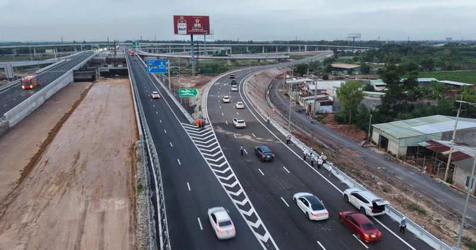
Kết nối cao tốc Biên Hòa - Vũng Tàu và TPHCM - Long Thành, giảm tải cho quốc lộ 51 🔗 MOI
Khoảng 18h ngày 24/5, Ban Quản lý dự án 85 (chủ đầu tư dự án thành phần 2 cao tốc Biên Hòa - Vũng Tàu) đã phối hợp Cục Quản lý đường bộ IV tháo dỡ rào chắn, cho phép xe trên cao tốc TPHCM - Long Thành
KHÔNG ĐỂ CÔNG NHÂN - LAO ĐỘNG PHẢI LO TOAN (*): Nâng chất việc làm, cơ hội thích ứng 🔗 MOI
Trong bối cảnh trí tuệ nhân tạo (AI), chuyển đổi số và cạnh tranh nhân lực ngày càng gay gắt, chăm lo đời sống, kỹ năng nghề nghiệp và cơ hội phát triển cho người lao động (NLĐ) chính là cách TP HCM t
Bom tấn ngoại khuấy động rạp hè 🔗 MOI
Phim "Supergirl" do Craig Gillespie đạo diễn, James Gunn giữ vai trò đồng sản xuất, quy tụ dàn diễn viên: Milly Alcock, Matthias Schoenaerts, Eve Ridley, David Krumholtz… Tác phẩm khởi chiếu tại rạp V
Argentina hoàn tất việc rút khỏi WHO giữa lo ngại dịch virus Hanta 🔗 MOI
Facebook Twitter Lưu bài viết Bản in Copy link Ngày 25/5, Chính phủ Argentina đã chính thức xác nhận rút khỏi Tổ chức Y tế thế giới (WHO), động thái được Tổng thống Javier Milei và Ngoại trưởng Pablo
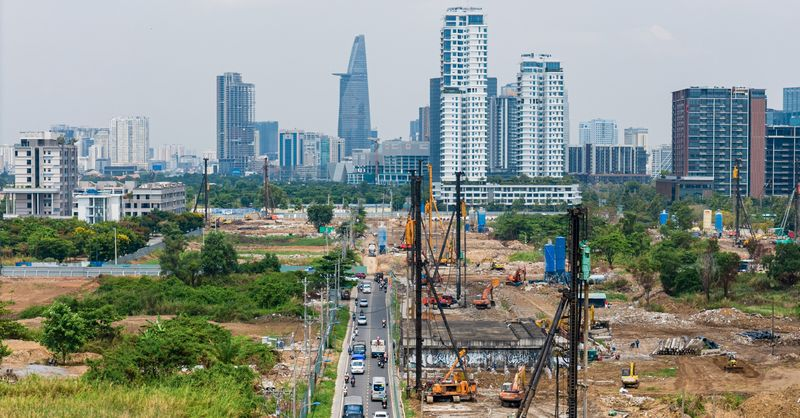
Cận cảnh 4 tuyến đường huyết mạch 12.000 tỷ đồng ở Thủ Thiêm tăng tốc về đích 🔗 MOI
Dự án 4 tuyến đường chính trong Khu đô thị mới Thủ Thiêm gồm Trần Bạch Đằng (ký hiệu R1), Tố Hữu (R2), Nguyễn Thiện Thành (R3) và Bùi Thiện Ngộ (R4), được khởi công từ tháng 4/2013 theo hình thức BT v

Lúng túng tìm lối đi cao tốc Biên Hòa - Vũng Tàu, nhiều tài xế vào đường bị chặn 🔗 MOI
Xem Clip: Nhiều tài xế ô tô con di chuyển từ trung tâm TPHCM khi đến phường Long Thành (TP Đồng Nai) tỏ ra lúng túng trước thông tin tuyến đường T2 đã được mở để kết nối vào cao tốc Biên Hòa – Vũng Tà
'Đào tạo nghề' cho robot hình người 🔗 MOI
"Về cơ bản, chúng tôi dạy robot tự suy nghĩ", Kenneth Ren, chuyên gia giải pháp nước ngoài của công ty RealMan Intelligent Technology, nói với CNBC khi huấn luyện robot của mình tại Trung tâm đào tạo
'Ký ức vụn' về một thời không thể nào quên 🔗 MOI
Ký ức về ánh sáng nơi đây trong tôi là sự nhặt nhạnh từ những nếp nhăn, những câu chuyện kể từ mỗi duyên lành tôi gặp, phận người tôi nghe. Đêm. Ban công tầng 15 ở Gò Vấp trước sáp nhập.
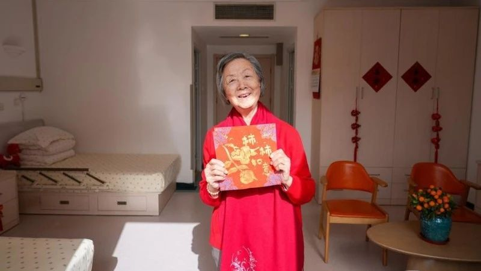
Trung Quốc siết quản lý thị trường thực phẩm bảo vệ sức khỏe dành cho người cao tuổi 🔗 MOI
Theo đó, phương án được ban hành nhằm triển khai chiến dịch trên phạm vi toàn quốc nhằm siết chặt quản lý thị trường và bảo vệ quyền lợi người tiêu dùng cao tuổi. Theo phóng viên TTXVN tại Bắc Kinh, c

Xoắn dây tinh và thời gian vàng cấp cứu 🔗 MOI

Bộ Tài chính đồng hành cùng doanh nghiệp nhỏ và vừa trên hành trình chuyển đổi kép 🔗 MOI
Chuyển đổi số Trong bối cảnh tiêu chuẩn ESG, yêu cầu Net Zero và sức ép cạnh tranh toàn cầu ngày càng gia tăng, phần lớn doanh nghiệp Việt Nam, đặc biệt là doanh nghiệp nhỏ và vừa đang đối mặt với kho

Doanh nghiệp tăng tốc phát hành trái phiếu 🔗 MOI
Theo VBMA, giá trị trái phiếu doanh nghiệp phát hành tháng 4/2026 đạt hơn 36,2 nghìn tỷ đồng, nâng tổng giá trị phát hành trên thị trường 4 tháng đầu năm lên khoảng 77,8 nghìn tỷ đồng. Theo dữ liệu H

Góc chuyên gia & nhà quản lý 🔗 MOI
Chi phí tuân thủ vẫn là nỗi lo của doanh nghiệp trong nhiều năm qua. Tuy nhiên, thời gian tới, vấn đề này sẽ được giải quyết một cách triệt để hơn theo đúng chỉ đạo từ Kết luận số 18-KL/TW của Ban Chấ

Hoạt động của Lãnh đạo Bộ Tài chính 🔗 MOI
Chi phí tuân thủ vẫn là nỗi lo của doanh nghiệp trong nhiều năm qua. Tuy nhiên, thời gian tới, vấn đề này sẽ được giải quyết một cách triệt để hơn theo đúng chỉ đạo từ Kết luận số 18-KL/TW của Ban Chấ
Gỡ hoãn xuất cảnh do nợ thuế tại sân bay: Cần lập đơn vị chuyên trách 🔗 MOI
(PLO)- Các chuyên gia kiến nghị cần đồng bộ pháp lý, lập cơ chế chuyên trách xử lý liên thông nợ thuế nhằm tạo điều kiện thuận lợi tối đa cho người dân xuất cảnh. Mới đây, Cục Thuế thông báo đang tích
Giảm trừ chi phí y tế, giáo dục cho người nộp thuế: Rất tích cực nhưng... 🔗 MOI
Bộ Tài chính vừa trình Chính phủ dự thảo Nghị định quy định chi tiết một số điều và biện pháp để tổ chức, hướng dẫn thi hành luật Thuế thu nhập cá nhân (dự thảo nghị định). Hiện nay, người nộp thuế đa
Lắng nghe người dân hiến kế:Tái thiết chiến lược nhân tài 🔗 MOI
Để TP HCM tiếp tục vươn xa, đã đến lúc đổi mới cách "chiêu hiền đãi sĩ", biến nhân tài thành động lực bứt phá lớn nhất. Kinh nghiệm và thực tế Kinh tế không tự tăng trưởng chỉ bằng vốn, quỹ đất hay cô
Thể chế vượt trội để siêu đô thị bứt phá 🔗 MOI
Sự chuyển đổi từ cơ chế thí điểm sang đạo luật chuyên biệt là đòn bẩy thể chế, tạo hành lang pháp lý vững chắc nhằm phát huy tối đa nguồn lực, đáp ứng yêu cầu quản trị siêu đô thị tích hợp hướng biển
Mở toàn bộ nút giao Long Thành từ cuối tháng 5 🔗 MOI
Các nhánh, hướng tuyến lưu thông khu vực của nút giao Long Thành Tin từ Khu Quản lý đường bộ IV (Cục Đường bộ Việt Nam), đơn vị vừa thực hiện kiểm tra hiện trường, thống nhất phương án tổ chức giao th
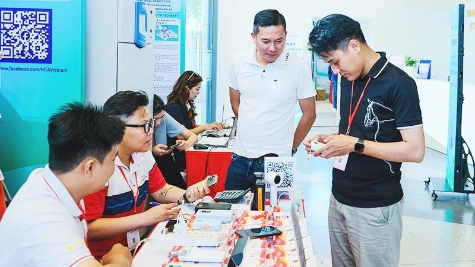
Đầu tư toàn diện hơn cho khoa học - công nghệ 🔗 MOI
Thành phố Hồ Chí Minh cũng được đánh giá cao về mức độ trưởng thành của hệ sinh thái và mức độ sôi động của cộng đồng khởi nghiệp. Công nghệ tài chính tiếp tục là lĩnh vực nổi bật nhất của thành phố k
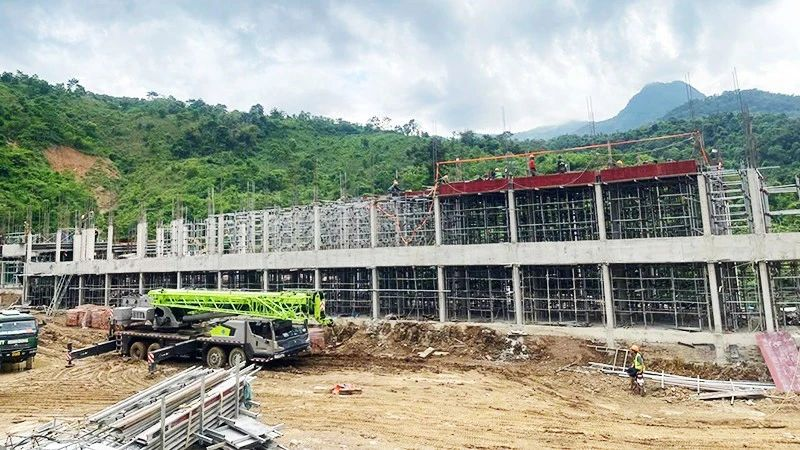
Ngóng đủ nguồn lực xây trường mới 🔗 MOI
Các công trình được kỳ vọng sẽ tạo điều kiện học tập ổn định cho học sinh miền núi, vùng đồng bào dân tộc thiểu số nơi biên cương Tổ quốc. Các trường phổ thông nội trú liên cấp tiểu học và THCS (giai
Quốc gia láng giềng của Việt Nam đang để kim loại quý bay lơ lửng: Công nghệ hiện đại nhưng vẫn "bó tay" 🔗 MOI
TIN MỚI Trang Interesting Engineering đưa tin, Trung Quốc có thể biến chất thải than (như tro bay) thành nguồn tài nguyên quý giá cho các kim loại quan trọng như germani, nhôm, liti và gali. Bằng cách
Dân công sở và sĩ tử ‘đuối sức’ giữa mùa hè 40 độ, cách nào giữ sức khỏe? 🔗 MOI
Khi cơ thể chịu áp lực kéo dài hoặc sinh hoạt không được cân bằng, nhu cầu bổ sung vitamin và khoáng chất cũng tăng lên đáng kể "Mặt nóng, người đừ, não lag" - cách dân văn phòng mô tả vui trên mạng x

Hiểu đúng thí điểm vùng phát thải thấp từ 1-7: Không cấm hết xe máy xăng như lời đồn 🔗 MOI
Chi tiết khu vực dự kiến thí điểm vùng phát thải thấp tại Hà Nội từ ngày 1-7-2026 - Ảnh: VTV Từ ngày 1-7, Hà Nội bắt đầu triển khai thí điểm vùng phát thải thấp (Low Emission Zone - LEZ) tại 9 phường
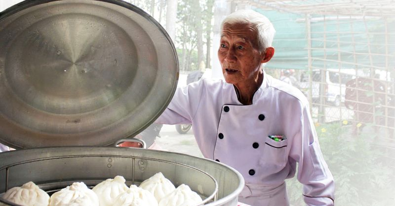
Người đầu bếp hơn 70 năm làm bánh, lấy đồng lời nuôi lớp học miễn phí 🔗 MOI
Mẻ bánh bao nóng hổi vừa mới ra lò - Ảnh: KHÁNH LY Ông là Đặng Chí Giai (89 tuổi), người đã theo nghề làm bánh được 72 năm. Hằng ngày ông không chỉ "chơi với bột với đường", mà còn sẵn lòng dạy miễn p
🔗 MOI
Chuyện gì sẽ xảy ra khi AI "cân" được tất cả người lao động trong công ty? Rất có thể chúng ta sẽ không được đi làm nữa... Chuyện gì sẽ xảy ra khi AI "cân" được tất cả người lao động trong công ty? -

quản lý ngân sách hiệu quả, phục vụ chính quyền địa phương 2 cấp 🔗 MOI
Tài chính Không chỉ tinh gọn, sắp xếp bộ máy và kịp thời tham mưu, ban hành, triển khai các văn bản hướng dẫn về kế toán phục vụ mô hình chính quyền địa phương 2 cấp, tham gia các đoàn công tác cùng B
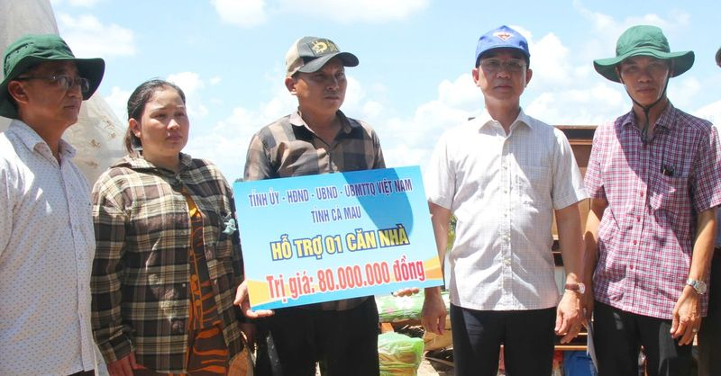
Cà Mau hỗ trợ 80 triệu đồng cho hộ dân có nhà bị sập hoàn toàn do dông, lốc 🔗 MOI
Ông Hồ Thanh Thủy (thứ hai từ phải sang) trao hỗ trợ 80 triệu đồng cho hộ có nhà bị sập hoàn toàn do dông, lốc - Ảnh: THANH HUYỀN Ngày 25-5, đoàn công tác của Tỉnh ủy Cà Mau do ông Hồ Thanh Thủy - Phó
Tổng Bí thư, Chủ tịch nước Tô Lâm ký nghị quyết mới của Bộ Chính trị về xây dựng, phát triển TP.HCM 🔗 MOI
Tổng Bí thư, Chủ tịch nước Tô Lâm - Ảnh: TTXVN Nghị quyết 09 của Bộ Chính trị do Tổng Bí thư, Chủ tịch nước Tô Lâm ký ban hành nhấn mạnh trong kỷ nguyên phát triển mới, TP.HCM cần phát huy vai trò là
Kỷ luật cảnh cáo Giám đốc Sở Nông nghiệp và Môi trường TP Huế 🔗 MOI
Ông Nguyễn Đình Đức - Giám đốc Sở Nông nghiệp và Môi trường TP Huế - Ảnh: UBND TP Huế Ngày 25-5, Thành ủy Huế cho biết vừa ra quyết định kỷ luật đối với ông Nguyễn Đình Đức - Thành ủy viên, Ủy viên Ba
Siêu máy tính Opta dự đoán Tây Ban Nha vô địch World Cup 2026, Arrgentina thì sao? 🔗 MOI
Yamal vẫn là niềm cảm hứng lớn nhất của tuyển Tây Ban Nha ở World Cup 2026 - Ảnh: AP Theo siêu máy tính của Opta, Tây Ban Nha - nhà vô địch châu Âu - có tỉ lệ vô địch World Cup 2026 lên đến 15,43%, ca
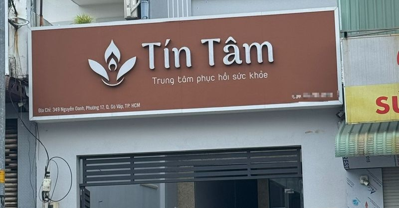
Cơ sở 'giải cơ phòng đột quỵ' bị đình chỉ 18 tháng sau phản ánh của Tuổi Trẻ 🔗 MOI
Sau phản ánh của Tuổi Trẻ, hộ kinh doanh trị liệu Tín Tâm (349 Nguyễn Oanh, phường Gò Vấp) bị Sở Y tế TP.HCM phạt 80 triệu đồng, đình chỉ hoạt động 18 tháng, tháo gỡ quảng cáo - Ảnh: XUÂN MAI Ngày 25-
YouTuber đủ chiêu trò câu view thắng lớn ở chốn nghị trường 🔗 MOI
YouTuber và TikToker nổi tiếng Fidias Panayiotou cầm điện thoại sau khi được công bố là một trong sáu đại diện của Cyprus trúng cử vào Nghị viện châu Âu tại thủ đô Nicosia ngày 11-6-2024 - Ảnh: AP The

Lễ hội truyền thống đền Cao An Phụ, tưởng nhớ An Sinh vương Trần Liễu 🔗 MOI
Lễ hội truyền thống đền Cao An Phụ năm 2026, tưởng niệm 775 năm ngày mất của An Sinh vương Trần Liễu được Ban Quản lý di tích Côn Sơn - Kiếp Bạc và phường Phạm Sư Mạnh tổ chức tại di tích quốc gia đặc

Đổi mới công tác xây dựng và thi hành pháp luật: Dấu ấn 1 năm thực hiện Nghị quyết số 66-NQ/TW 🔗 MOI
Tài chính Trong tiến trình phát triển đất nước, cải cách thể chế luôn được xác định là khâu đột phá để khơi thông nguồn lực và nâng cao năng lực cạnh tranh quốc gia. Trên nền tảng những chuyển động mạ

nhà đất công đôi dư 🔗 MOI
Tài chính Đằng sau hàng chục nghìn cơ sở nhà, đất công chưa được xử lý dứt điểm không chỉ là câu chuyện thủ tục hay hồ sơ pháp lý, mà còn là tâm lý e ngại trách nhiệm trong quá trình thực thi. Mệnh lệ
Rà soát chặt chẽ về xử phạt vi phạm trong lĩnh vực thủy sản 🔗 MOI
Chiều 25/5, tại trụ sở Chính phủ, Phó Thủ tướng Hồ Quốc Dũng và Phó Thủ tướng Lê Tiến Châu đồng chủ trì cuộc họp cho ý kiến về dự thảo Nghị định quy định xử phạt vi phạm hành chính trong lĩnh vực thủy

Chính phủ với công dân 🔗 MOI
25/05/2026 (Chinhphu.vn) - Công ty của ông Nguyễn Thuận (Nghệ An) có nhu cầu sản xuất và kinh doanh một số hóa chất thuộc danh mục hóa chất trọng điểm quy định... 25/05/2026 (Chinhphu.vn) - Nghị định
Chân dung doanh nghiệp 🔗 MOI
Becamex ghi nhận doanh thu 1.106 tỷ đồng trong quý 1, giảm 40% so với cùng kỳ, lợi nhuận sau thuế còn 288 tỷ đồng – mức thấp nhất kể từ đầu năm 2024.

Chỉ đạo, quyết định của Chính phủ - Thủ tướng Chính phủ 🔗 MOI
25/05/2026 (Chinhphu.vn) - Ngày 25/5/2026, Phó Thủ tướng Hồ Quốc Dũng ký Chỉ thị số 23/CT-TTg của Thủ tướng Chính phủ về việc đẩy mạnh thực hiện Kết luận số... 25/05/2026 (Chinhphu.vn) - Phó Thủ tướng
PGS.TS Trần Xuân Trường làm Hiệu trưởng Trường Đại học Mỏ - Địa chất 🔗 MOI
Thời hạn giữ chức vụ Hiệu trưởng Trường Đại học Mỏ - Địa chất với PGS.TS Trần Xuân Trường của 5 năm. PGS.TS Trần Xuân Trường nhận nhiệm vụ mới, thay vị trí của người tiền nhiệm là GS.TS Trần Thanh Hải
Loạt phim hoạt hình nổi tiếng Nhật Bản Pokémon tái ngộ khán giả 🔗 MOI
Sự trở lại này được kỳ vọng sẽ không chỉ thu hút thế hệ khán giả nhí mà còn khơi gợi ký ức tuổi thơ của nhiều thế hệ 8X, 9X từng gắn bó với thế giới Pokémon trên màn ảnh nhỏ. Cảnh trong phim hoạt hình
Hàng giả vẫn tuồn ra thị trường vì thu lợi 'khủng' 🔗 MOI
Tối 25/5, Chi cục Quản lý thị trường (QLTT) TPHCM cho biết, trong đợt cao điểm đấu tranh chống buôn lậu, gian lận thương mại, hàng giả và xâm phạm quyền sở hữu trí tuệ, Đội QLTT số 3 đã phối hợp với c
Khoảnh khắc catwalk ấn tượng của Hà Trúc Linh, Mỹ Vân cùng sinh viên Học viện Hàng không Việt Nam 🔗 MOI
Hoa hậu Quán quân Trần Ngọc Ánh khuấy động sinh viên Học viện Hàng không Việt Nam
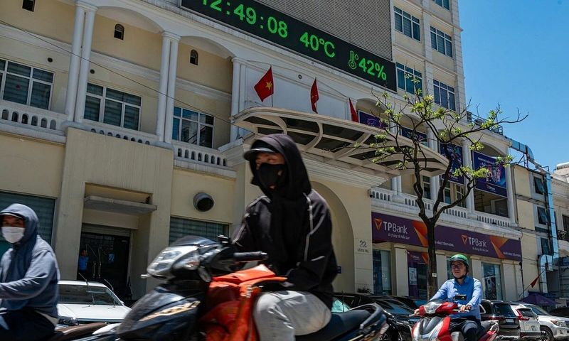
Người Hà Nội đi làm sớm trốn nắng nóng 🔗 MOI
6h, chị Thu Hằng (35 tuổi) chở con rời nhà ở phường Tây Mỗ, sớm gần một tiếng so với thường ngày. "Tối qua xem dự báo, tôi biết hôm nay là đỉnh điểm đợt nóng nên cho con ngủ từ 21h để sáng đi sớm", ch
Tuyển sinh lớp 10: Thí sinh cần tránh mất điểm oan 🔗 MOI
Chịu khó “nhặt” điểm Ở giai đoạn nước rút, thầy Nguyễn Mạnh Cường, giáo viên dạy Toán tại hệ thống giáo dục Hocmai, Hà Nội lưu ý học sinh không nên ôn tập dàn trải, thiếu trọng tâm. Thí sinh cần căn c
Tìm đồng đội trên các điểm cao biên giới 🔗 MOI
Chiến tranh đã lùi xa, màu xanh cây cỏ phủ kín những điểm cao, nhưng dưới màu xanh đó vẫn còn hơn 1.200 liệt sĩ chưa được tìm thấy. Mỗi ngày trôi qua, cơ hội tìm thấy các liệt sĩ khó khăn hơn bởi địa
Tăng cường niềm tin về triển vọng phát triển bứt phá của đất nước 🔗 MOI
Bước vào giai đoạn phát triển mới với yêu cầu tăng trưởng nhanh, bền vững và hội nhập sâu rộng, nhiệm vụ cải cách thể chế, nhất là cải cách thủ tục hành chính, càng trở nên cấp thiết, giữ vai trò then
Quan chức Iran tiết lộ tình trạng sức khoẻ của Lãnh tụ tối cao Khamenei 🔗 MOI
Theo hãng tin ILNA , phát ngôn viên Bộ Y tế Iran, Hossein Kermanpour hôm thứ Hai (25/5) cho biết các chấn thương của ông Mojtaba Khamenei không nghiêm trọng và không cần điều trị đặc biệt. Ông Kermanp
Cơn mưa bất ngờ và những lát cắt mưu sinh như một cuốn phim cũ 🔗 MOI
Thứ hai đầu tuần, ban ngày trời vẫn nắng nóng với nền nhiệt độ khoảng 35 - 37 o C. Tuy nhiên, đến cuối ngày, nhiều khu vực ở TP.HCM xuất hiện mưa. Một số nơi mưa rào, nhiều nơi mưa lớn kèm gió giật.
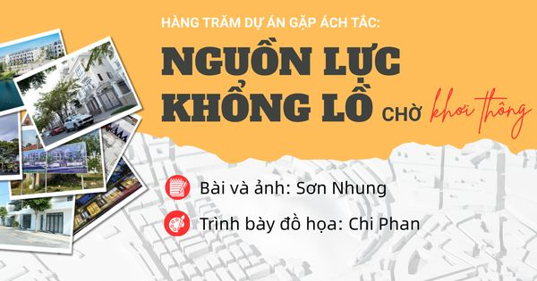
[eMagazine] - Hàng trăm dự án gặp ách tắc: Nguồn lực khổng lồ chờ khơi thông 🔗 MOI
Theo báo cáo tình hình xử lý các dự án tồn đọng của Sở Tài chính TPHCM, sau sắp xếp đơn vị hành chính, thành phố có 838 công trình, dự án, khu đất tồn đọng, khó khăn cần gỡ vướng. Trong đó, 60 dự án t
Cô gái Hà Tĩnh vào Đại học Thanh Hoa sau một lần từ bỏ 🔗 MOI
Trần Thị Vân Anh, 27 tuổi, quê Hà Tĩnh, nhận tin trúng tuyển ngành Ngôn ngữ học ứng dụng, Đại học Thanh Hoa hôm 8/5. Ngôi trường danh tiếng bậc nhất Trung Quốc hiện ở top 12 thế giới, theo bảng xếp hạ
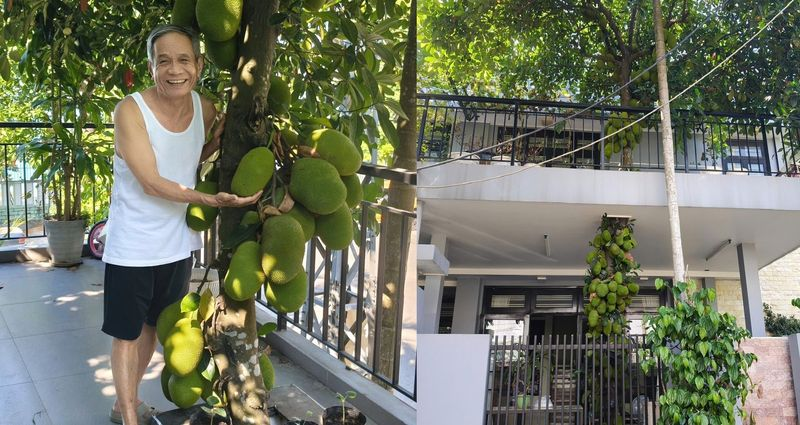
Cây mít mọc xuyên tầng 2 ở Đà Nẵng gây sốt, trái chi chít từ gốc tới ngọn 🔗 MOI
Những ngày qua, hình ảnh cây mít sai trĩu quả trong sân một ngôi nhà ở Đà Nẵng được nhiều người chia sẻ trên mạng xã hội. Không chỉ gây chú ý bởi hơn 100 trái lớn nhỏ mọc dày đặc dọc thân, cây mít này
Sống trái với bản dạng giới 🔗 MOI
Buổi chiều tan trường, trong khi bạn bè nán lại trò chuyện, Khải Đan, nhân viên văn phòng ở Tây Ninh, chỉ có một mục tiêu duy nhất là chạy thẳng vào nhà vệ sinh, lột bỏ chiếc áo dài ra, rồi mới chịu v
Công bố nhiều tư liệu quý về nhạc sĩ Thanh Tùng 🔗 MOI
đã được gia đình nhạc sĩ giới thiệu đến đông đảo người hâm mộ ông trong triển lãm "Legacy of Love" khai mạc chiều 25-5 tại Nhà Triển lãm 16 Ngô Quyền, TP Hà Nội. "Legacy of Love" không được thực hiện
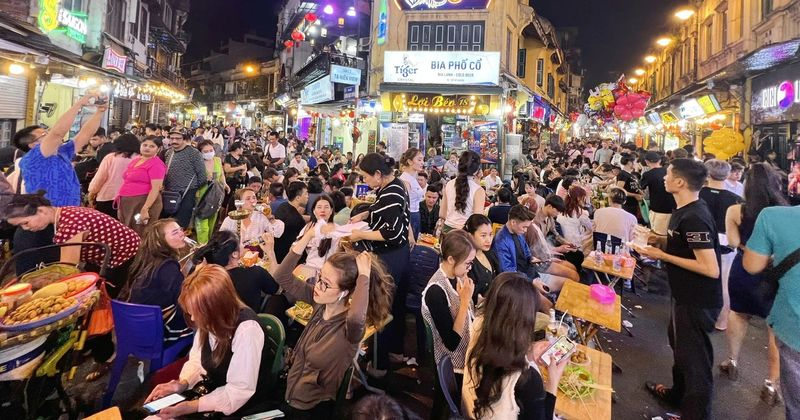
Tin tức đặc biệt trên báo in Thanh Niên 26.5.2026 🔗 MOI
Điện sinh hoạt có "gánh" giờ cao điểm? Với việc áp dụng khung giờ cao điểm tính giá điện từ 17 giờ 30 - 22 giờ 30, đối tượng bị tác động chủ yếu là khu vực sản xuất và kinh doanh dịch vụ ăn uống, vui
Điều tra: Vạch trần chiêu trò ‘làm tiền’ của nhóm đánh giày - Kỳ 2: Tạo 'ma trận' vây du khách 🔗 MOI
Theo ghi nhận, nhóm đánh giày chuyên moi tiền của du khách khoảng 20 người thường xuyên xuất hiện tại các địa điểm như cổng Tây chợ Bến Thành, khu vực Saigon Square, đường Thái Văn Lung… để hành nghề.

Kết quả bóng đá hôm nay 26/5 🔗 MOI
Kết quả bóng đá hôm nay NGÀY GIỜ TRẬN ĐẤU TRỰC TIẾP VĐQG NA UY 2026 – VÒNG 10 25/05 19:30 Start IK 2-0 Valerenga 25/05 22:00 Tromso IL 1-1 Aalesund KFUM Oslo 2-0 Rosenborg BK Ham-Kam 2-0 Lillestrom Sa
Nghề trầm dưới dãy Trường Sơn: Từ linh khí đại ngàn đến báu vật trong vườn nhà 🔗 MOI
Từng là loài cây mọc tự nhiên trong rừng, nay người dân xã Phúc Trạch đưa cây dó bầu về "thuần hóa" trong vườn nhà, biến vùng đất bưởi tiến vua thành một "thủ phủ" trầm hương sầm uất. Để rồi từ những
Hà Nội phải tiên phong phát triển nhà ở cho thuê 🔗 MOI
Hiện Hà Nội đã hoàn thành vượt chỉ tiêu phát triển nhà ở xã hội năm 2025 và đang triển khai khối lượng lớn dự án cho giai đoạn tới. Song người đứng đầu Chính phủ chỉ rõ, phải thẳng thắn nhận diện nhữn
Lịch âm hôm nay 26.5: Ngày Thuần Dương có may mắn? 🔗 MOI
Dương lịch hôm nay là thứ ba, đánh dấu năm 2026 trải qua ngày thứ 145. Theo lịch âm hôm nay 26.5 là ngày 10 tháng 4, theo cách gọi can chi là ngày Canh Tý, tháng Quý Tỵ, năm Bính Ngọ. Lịch âm ngày 26.
Năm 2045, hình thành một số lĩnh vực khoa học cơ bản có năng lực cạnh tranh quốc tế 🔗 MOI
Xác định mục tiêu phát triển nghiên cứu khoa học cơ bản trong giai đoạn mới Phát biểu kết luận buổi làm việc, Tổng Bí thư, Chủ tịch nước Tô Lâm đánh giá, nhận thức về vai trò của nghiên cứu khoa học c
Đối thủ của U17 Việt Nam ở World Cup có động thái bất ngờ 🔗 MOI
Tối 25/5, LĐBĐ Mali (FEMAFOOT) thông báo chấm dứt hợp đồng với HLV đội U17 Demba Mamadou Traore. Chủ tịch FEMAFOOT Mahazou dit Baba Cisset trực tiếp gọi điện thông báo quyết định sa thải trước khi gửi
20 lần chinh phục Everest 🔗 MOI
Kenton Cool hiện là hướng dẫn viên leo núi chuyên nghiệp, ông chinh phục Everest lần đầu vào năm 2004 và từng bị tai nạn khi leo núi, song vẫn kiên trì vượt qua và quay trở lại Everest nhiều lần. Đấu
Đầu tư công càng lớn, kỷ luật thực thi càng phải nghiêm 🔗 MOI
Phóng viên (PV): Số liệu của Bộ Tài chính cho thấy giải ngân vốn đầu tư công đang có sự bứt tốc mạnh mẽ. Tuy nhiên tính đến ngày 14/5/2026, tỷ lệ giải ngân của cả nước mới đạt 16,4% kế hoạch Thủ tướng

Google Finance tích hợp AI: Người dùng phổ thông cũng có thể đầu tư như chuyên gia 🔗 MOI
Nhà đầu tư nghiệp dư vẫn có thể hiểu thị trường nhờ công cụ AI mới của Google. Google đang thử nghiệm phiên bản Google Finance tích hợp trí tuệ nhân tạo (AI) tại Israel, đánh dấu bước đi mới trong tha

Tham vấn chính sách 🔗 MOI
25/05/2026 (Chinhphu.vn) - Bộ Tài chính đang dự thảo Luật Hỗ trợ doanh nghiệp nhỏ và vừa (sửa đổi). Trong đó, Bộ đề xuất quy định mới về Quỹ bảo lãnh tín dụng... 25/05/2026 (Chinhphu.vn) - Tại dự thảo
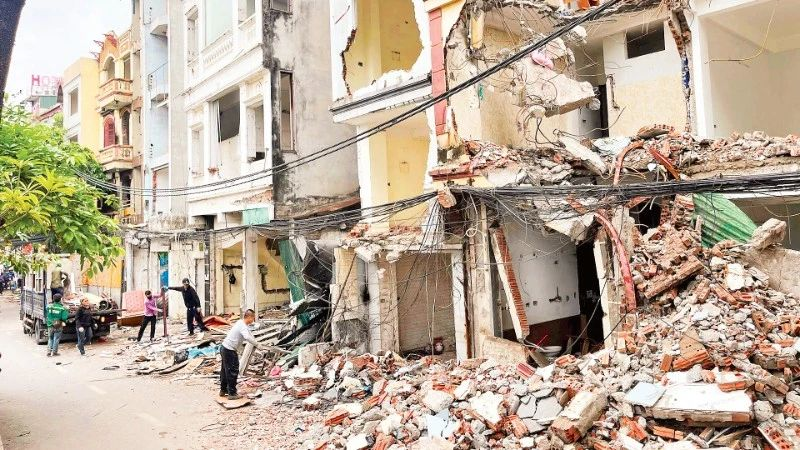
Dồn lực giải phóng mặt bằng các dự án giao thông trọng điểm 🔗 MOI
Có được kết quả này nhờ nỗ lực của cả hệ thống chính trị, từ thành phố đến cấp phường, trong đó việc đối thoại, lắng nghe và giải quyết kịp thời kiến nghị của người dân trong diện giải phóng mặt bằng
Khách đến Việt Nam tiêu gì?: Bỏ trống 'mảnh đất màu mỡ' từ mua sắm 🔗 MOI
Hàng hóa có, nhưng thiếu liên kết với du lịch Theo thống kê, chi tiêu mua sắm của khách quốc tế tại VN hiện chỉ chiếm khoảng 12 - 15% tổng chi tiêu chuyến đi, thấp nhất Đông Nam Á. Tại nhiều quốc gia
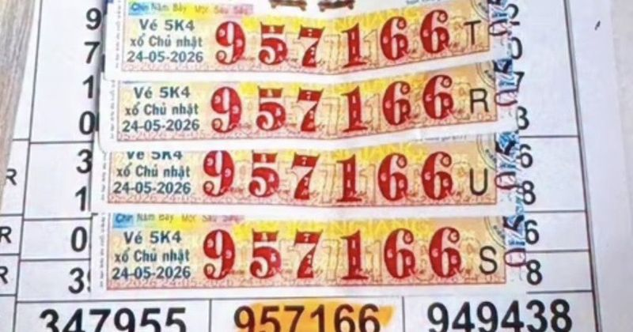
Mua 4 tờ vé số ngẫu nhiên, cặp vợ chồng nghèo ở xóm trọ trúng độc đắc 8 tỉ 🔗 MOI
Đại lý vé số Phương Nghi ở TP.HCM cho biết đã đổi thưởng cho khách có 4 tờ vé số trúng độc đắc. Theo đó, 4 tờ có dãy số 957166 thuộc đài Kiên Giang mở thưởng xổ số miền Nam ngày 24 tháng 5 trúng độc đ
'Cát tát' của giáo viên nước ngoài 🔗 MOI
Để đứng lớp tại VN, điều 151 bộ luật Lao động 2019 nêu điều kiện tiên quyết: người nước ngoài phải có trình độ chuyên môn, kỹ thuật, tay nghề và kinh nghiệm làm việc, đặc biệt lý lịch tư pháp phải tro
Vẫn còn nhiều việc phải làm 🔗 MOI
Tại sân Frost Bank Center, một trận đấu của đội bóng San Antonio Spurs thuộc Giải Bóng rổ Nhà nghề Mỹ (NBA) không bao giờ mang đến những "món ăn" đơn lẻ. Câu lạc bộ cung cấp thực đơn hoàn chỉnh. Trong
Chiến lược “ngoại giao pháo hạm” tại Hormuz 🔗 MOI
Từ tháng 2/2026, sau khi xung đột giữa Mỹ, Israel với Iran leo thang, eo biển này trở thành tâm điểm của hình thức đối đầu cổ điển là “ngoại giao pháo hạm” (gunboat diplomacy). Cơ chế “phong tỏa kép”
Sự đảo chiều trên thị trường trái phiếu 🔗 MOI
Sự đảo chiều này phản ánh áp lực thanh khoản trong hệ thống tài chính đang lớn dần lên, trong bối cảnh tín dụng tăng tốc, huy động dân cư chậm lại và nhu cầu vốn trung, dài hạn gia tăng. Diễn biến đó
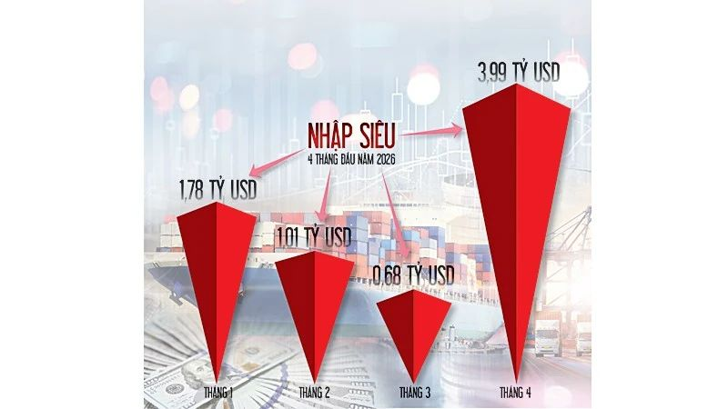
Cơ hội nào khi cán cân thương mại đảo chiều? 🔗 MOI
Trong giai đoạn 2021 - 2025, cán cân thương mại hàng hóa đều ghi nhận thặng dư, năm 2025 tiếp tục đạt mức trên 20 tỷ USD. Tuy nhiên bước sang năm 2026, xu hướng đã thay đổi. Tháng 1, 2 và 3 ghi nhận n
Không ngừng phát triển quan hệ hợp tác song phương Việt Nam-Azerbaijan 🔗 MOI
Tham dự sự kiện có Thứ trưởng Ngoại giao Lê Thị Thu Hằng, đại diện các ban, bộ, ngành Việt Nam, đại sứ quán các nước tại Việt Nam, Liên hiệp các tổ chức hữu nghị Việt Nam , cùng đông đảo người Việt từ
Góc khuất của ngành công nghiệp livestream thần tượng ở Trung Quốc 🔗 MOI
Bên trong phòng thu chuyên phát trực tiếp (livestream) của công ty truyền thông Zhongxinghui tại thành phố Thâm Quyến, các nhóm biểu diễn đang liên tục nhảy theo nhạc dưới ánh đèn nhấp nháy. Trên màn
Đối thủ của Bồ Đào Nha bị yêu cầu cách ly trước World Cup 🔗 MOI
Andrew Giuliani, Giám đốc điều hành lực lượng đặc trách World Cup của Nhà Trắng, cho biết Mỹ đã thông báo với FIFA và CHDC Congo về yêu cầu này. Tuyển Congo hiện tập huấn tại Bỉ và dự kiến đá hai trận
Nhà nước thu hồi đất đang thế chấp, tiền đền bù trả chủ nhà hay ngân hàng? 🔗 MOI
Tôi đang mơ hồ vì gia đình tôi đủ điều kiện được bồi thường, hỗ trợ tái định cư. Nhưng khoản vay của tôi với ngân hàng vẫn còn hơn một tỷ đồng chưa thanh toán xong. Tôi cho rằng đất bị Nhà nước thu hồ
Đạo văn, giả mạo dữ liệu có thể bị cấm tham gia nhiệm vụ khoa học vô thời hạn 🔗 MOI
Sinh viên Trường đại học Công nghệ, Đại học Quốc gia Hà Nội trong phòng thực hành - Ảnh: UET Ngày 25-5, Bộ Khoa học và Công nghệ ban hành hướng dẫn về liêm chính khoa học và đạo đức nghề nghiệp trong

Công cụ AI liên quan Anthropic tự ý xóa sạch dữ liệu của một doanh nghiệp trong 9 giây 🔗 MOI
Hành động phá hoại của công cụ lập trình AI đã khiến khách hàng của Công ty PocketOS rơi vào tình thế khó khăn - Ảnh TED HSU Báo Guardian đưa tin một công cụ lập trình vận hành bằng trí tuệ nhân tạo (
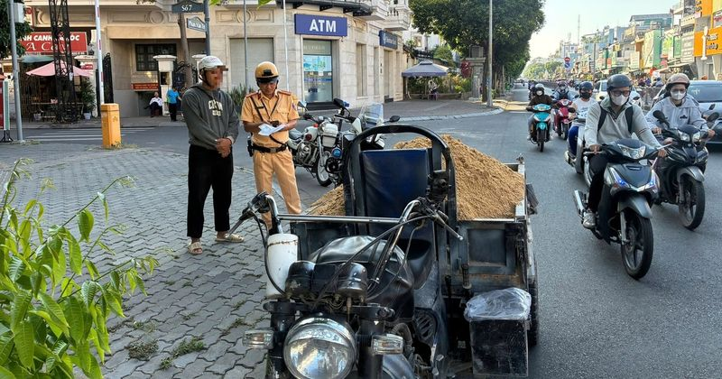
CSGT TP.HCM tịch thu hàng loạt xe ba gác, quyết liệt xử lý 'không ngoại lệ' 🔗 MOI
Ngày 25.5, Đội CSGT Hàng Xanh, thuộc Phòng CSGT Công an TP.HCM cho biết đã tăng cường xử lý quyết liệt tình trạng xe ba gác , xe tự chế, không đảm bảo an toàn kỹ thuật vi phạm hoạt động trên địa bàn.
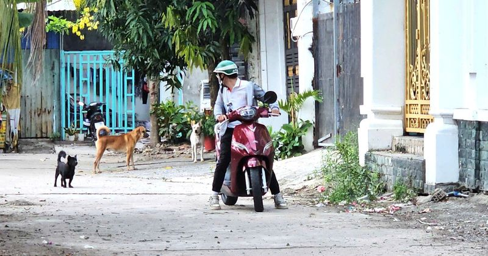
Nhận hơn 55 đơn phản ánh 'nỗi khiếp sợ', lực lượng chức năng vây bắt chó thả rông 🔗 MOI
Ngày 25.5, UBND xã Nhà Bè ( TP.HCM ) cho biết, vừa qua địa phương đã ra quân nhằm giải quyết nạn chó thả rông tại xã Nhà Bè, cụ thể tại khu dân cư Vạn Phát Hưng, Phú Xuân... và các tuyến đường trọng đ
Tranh cãi căng thẳng về vết bóng ở Roland Garros 2026 🔗 MOI
Ở game hai set năm, niềm hy vọng chủ nhà Herbert yêu cầu trọng tài Timo Janzen xem lại dấu bóng trên sân mà anh tin rằng cú đánh của Sonego đã ra ngoài. Ông Janzen bước xuống sân kiểm tra nhưng vẫn xá
CLB Triều Tiên vô địch giải nữ châu Á trên đất Hàn Quốc 🔗 MOI
Kim Kyong-yong dứt điểm ghi bàn trong trận Naegohyang thắng Tokyo Verdy Beleza 1-0 ở chung kết AFC Champions League nữ tại thành phố Suwon, Hàn Quốc ngày 23/5/2026. Ảnh: Reuters Bàn duy nhất trận đấu
Wawrinka bị loại sớm ở kỳ Roland Garros cuối cùng 🔗 MOI
Trước đối thủ 25 tuổi người Hà Lan thiên về đánh bền, Wawrinka chỉ thắng được set hai, trước khi thua sau bốn set. Ở set 4, tay vợt 41 tuổi để mất game giao bản lề, nhưng có break-point ở game giao qu
Bao cao su có bảo vệ an toàn tuyệt đối? 🔗 MOI
Trả lời: Đeo bao cao su giúp giảm nguy cơ lây bệnh tình dục, nhưng không phải bảo vệ 100%. Bao cao su che phủ dương vật nhưng không che toàn bộ vùng da sinh dục. Nếu tổn thương nằm ở gốc dương vật, bì
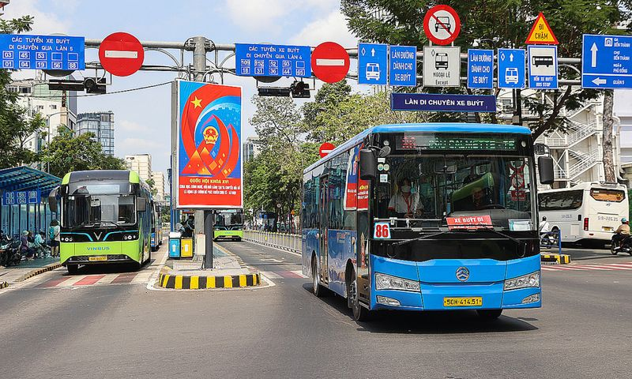
Đề xuất thí điểm xe buýt mini đón khách theo nhu cầu ở TP HCM 🔗 MOI
Trong văn bản gửi UBND TP HCM, Sở Xây dựng cho biết DRT vẫn là loại hình vận tải hành khách công cộng, có điểm đầu cuối và danh sách điểm đón trả khách được đăng ký, công khai. Tuy nhiên, khác với xe

Tuyển bóng chuyền nữ Việt Nam nhận chỉ tiêu top 4 Asiad 2026 🔗 MOI
Tuyển bóng chuyền nữ Việt Nam đã hội quân tại Hà Nội ngày 25/5, với 12 VĐV gồm : Trần Thị Thanh Thúy, Võ Thị Kim Thoa, Lê Như Anh, Lê Thanh Thúy, Nguyễn Khánh Đang, Vi Thị Như Quỳnh, Vi Thị Yến Nhi, T
Cột mốc mới trong điều trị sốt rét ở trẻ nhỏ 🔗 MOI
Theo WHO, tại một số khu vực ở châu Phi, khoảng 18% số trẻ dưới sáu tháng tuổi mắc sốt rét. Tuy nhiên, trong thời gian dài, nhóm bệnh nhi này chủ yếu phải sử dụng thuốc dành cho trẻ lớn hơn, làm tăng
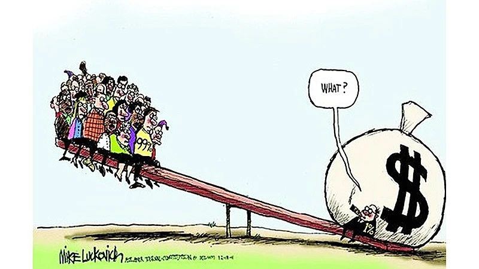
Người ăn không hết, kẻ lần chẳng ra 🔗 MOI
Sau gần 6 tháng điều tra về lợi nhuận trong ngành thực phẩm và hệ thống bán lẻ, cuối tuần qua, Thượng viện Pháp đã công bố báo cáo dựa trên gần 190 cuộc điều trần với nông dân, doanh nghiệp chế biến t
Bài toán năng lượng tái tạo cho chiếu sáng tại Việt Nam 🔗 MOI
Nhằm giảm tiêu thụ điện, chi phí vận hành và phát thải CO 2 , góp phần vào mục tiêu cam kết Net Zero vào năm 2050 của Việt Nam. Định hướng phát triển năng lượng mặt trời cũng đã được cụ thể hóa thông
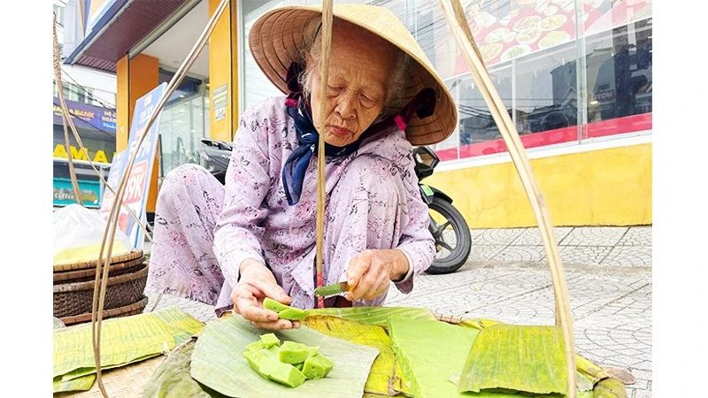
Nỗi niềm người giữ hồn quê 🔗 MOI
Trong những gói bánh đúc mật xanh trong, ngọt dịu ấy không chỉ có vị quê nhà, mà còn có ký ức của nhiều thế hệ và nỗi trăn trở của một người đang cố giữ lại một món quà xưa trước nguy cơ mai một. Gánh
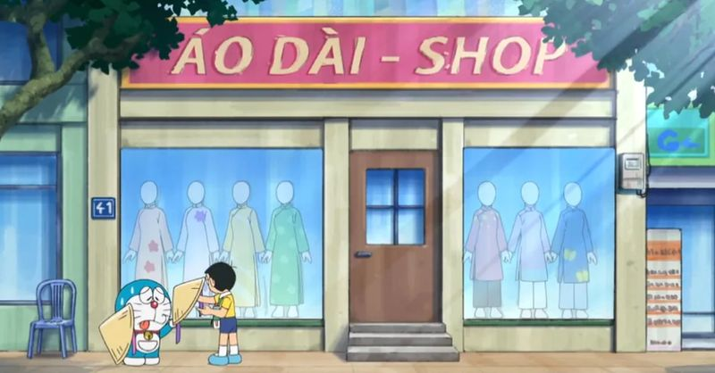
Tập Doraemon về Việt Nam xác nhận chi tiết 'S:' là chủ ý 🔗 MOI
Tập phim lồng ghép nhiều yếu tố văn hóa Việt Nam như áo dài, nón lá và ẩm thực địa phương - Ảnh: TV-Asahi Không chỉ gây chú ý với sự xuất hiện của hồ Hoàn Kiếm, vịnh Hạ Long, áo dài hay nón lá, tập đặ

Coi chừng nhiễm liên cầu lợn vì thói quen ăn tiết canh, thịt tái 🔗 MOI

Làm thế nào để lên thực đơn dinh dưỡng cho gia đình nhiều thế hệ? 🔗 MOI

Khám tiền hôn nhân ở nam và nữ khác nhau như thế nào? 🔗 MOI

Sử dụng thuốc tăng cường sinh lý để kéo dài 'cuộc yêu', có nên không? 🔗 MOI

Chồng không tinh trùng nhưng vợ vẫn sinh được con 'chính chủ', vì sao? 🔗 MOI

Viêm da tiết bã ở trẻ em khác gì ở người lớn? 🔗 MOI

Xóa xăm có xóa được triệt để hay không? 🔗 MOI

6 dấu hiệu thầm lặng cảnh báo đột quỵ trước 1 tháng 🔗 MOI
Theo The Times of India, 6 dấu hiệu của cơ thể cảnh báo trước 1 tháng khi đột quỵ sắp xảy ra: 1. Chóng mặt bất thường Cảm giác chóng mặt thường được cho là do bỏ bữa, mất nước hoặc đứng dậy quá nhanh.
🔗 MOI
Sau gần một năm khuynh đảo phòng vé Nhật Bản, Demon Slayer: Infinity Castle vẫn chưa hạ nhiệt khi tiếp tục thắng lớn tại Crunchyroll Anime Awards 2026, ngay trước thềm phát hành Blu-ray và DVD vào mùa
Tính phương án cho hơn 5.000 người hoạt động không chuyên trách ở TP.HCM 🔗 MOI
Công chức phường Xuân Hòa giải quyết thủ tục hành chính cho người dân - Ảnh: QUANG ĐỊNH UBND TP.HCM vừa ban hành kế hoạch rà soát, sắp xếp, bố trí, giải quyết chế độ, chính sách đối với người hoạt độn
Hộ dân ở TP.HCM giao nộp 6 con chim công quý hiếm 'từ đâu bay tới' 🔗 MOI
Kiểm lâm viên thuộc Đội Kiểm lâm cơ động và Phòng cháy chữa cháy rừng số 1 (thuộc Chi cục Kiểm lâm TP.HCM) tiếp nhận chim công Ấn Độ từ bà Huỳnh Lệ Quỳnh - Ảnh: NGỌC KHẢI Ngày 25-5, Đội Kiểm lâm cơ độ

Hệ thống Bảo hiểm xã hội Việt Nam: Tăng tốc thực hiện các chỉ tiêu nhiệm vụ năm 2025 🔗 MOI
Theo Bảo hiểm xã hội (BHXH) TP. Hồ Chí Minh, mặc dù năm 2025 gặp một số khó khăn, tuy nhiên tập thể cán bộ viên chức, người lao động BHXH TP. Hồ Chí Minh quyết tâm hoàn thành vượt chỉ tiêu giao, với s
Bí thư Trần Lưu Quang và Thường trực Thành ủy TP.HCM thăm, chúc mừng Đại lễ Phật đản 🔗 MOI
Bí thư Trần Lưu Quang thăm, chúc mừng Đại lão Hòa thượng Thích Trí Quảng - Ảnh: VIỆT DŨNG/SGGP Chiều 25-5, đoàn lãnh đạo TP.HCM do ông Trần Lưu Quang - Ủy viên Bộ Chính trị, Bí thư Thành ủy TP.HCM - l
Sốc ở tuyển Tây Ban Nha dự World Cup 2026: Không có cầu thủ Real nào 🔗 MOI
Dù có nhiều ngôi sao bản địa, Real Madrid vẫn không đóng góp tuyển thủ Tây Ban Nha nào ở World Cup 2026 - Ảnh: REUTERS "Cú sốc của bóng đá Tây Ban Nha, khi đội tuyển quốc gia sạch bóng Real Madrid", b
Thủ tướng: Hà Nội khởi công các dự án nhà ở cho thuê ngay trong tháng 6 🔗 MOI
Thủ tướng Lê Minh Hưng chủ trì cuộc họp - Ảnh: VGP Phát biểu kết luận cuộc làm việ c, Thủ tướng Lê Minh Hưng nhấn mạnh phát triển nhà ở thương mại phân khúc phù hợp với khả năng chi trả và nhà ở cho t
Một năm thực hiện chính quyền 2 cấp ở phường Minh Phụng: Hơn 15.000 hồ sơ, không hồ sơ nào trễ hạn 🔗 MOI
Ông Nguyễn Trần Bình - Bí thư Đảng ủy, Chủ tịch HĐND phường Minh Phụng - Ảnh: PHƯƠNG NHI Tối 25-5, phường Minh Phụng (TP.HCM) tổ chức hội nghị sơ kết một năm vận hành mô hình chính quyền 2 cấp. Tham d
Tỉ số 'kinh hoàng' ở tứ kết bóng đá nam Đại hội Thể dục thể thao TP.HCM 🔗 MOI
Các cầu thủ Phường Tân Phú ăn mừng bàn thắng - Ảnh: Phường Tân Phú Chiều 25-5, trận tứ kết thứ 2 môn bóng đá nam Đại hội Thể dục thể thao TP.HCM lần 1-2026 giữa Phường Tam Long và Phường Tân Phú đã di

Nhật Bản ra mắt 'máy giặt người' trị giá 385.000 USD, làm sạch từ đầu đến chân trong 15 phút 🔗 MOI
Thống đốc Yoshimura Yoshifumi của tỉnh Osaka trải nghiệm máy giặt người Mirai - Ảnh: SISA COMMUNICATION YOUTUBE Theo trang Interesting Engineer ngày 30-11, Công ty Science Inc. của Nhật Bản vừa chính

Hoàn thiện khung khổ pháp lý về tiết kiệm 🔗 MOI
Pháp luật Trong công cuộc phòng, chống lãng phí hiện nay khó có thể tránh khỏi những khó khăn, nguy hiểm, ảnh hưởng tới người đấu tranh chống lãng phí. Do đó, việc bảo vệ người cung cấp thông tin phát
Cuba chỉ trích EU xài 'tiêu chuẩn kép' khi chê trách Cuba 🔗 MOI
Ngoại trưởng Cuba Bruno Rodriguez - Ảnh: AFP Theo Hãng tin AFP, hôm 25-5, Ngoại trưởng Cuba Bruno Rodriguez đã chỉ trích phát biểu của Đại diện cấp cao về chính sách đối ngoại của Liên minh châu Âu (E
Nga phát hiện thủy lôi của NATO gắn vào tàu cập cảng Nga 🔗 MOI
Tàu Arrhenius cập cảng Nga đến từ Bỉ - Ảnh: Ria Novosti Theo Đài Russia Today (RT), ngày 25-5, Ủy ban Điều tra Nga thông báo các thợ lặn đã phát hiện thủy lôi từ trường được sản xuất ở nhà máy của một
Cán bộ lãnh đạo, quản lý không hoàn thành nhiệm vụ từ 2 quý liên tiếp trở lên sẽ bị thay thế 🔗 MOI
Ảnh minh họa - Ảnh: QUANG ĐỊNH Mục đích của văn bản nhằm cụ thể hóa và hướng dẫn thực hiện thống nhất chủ trương của Bộ Chính trị về đánh giá cán bộ lãnh đạo, quản lý hằng quý. Cùng với đó, tiếp tục đ

Cải cách tài chính công thúc đẩy tăng trưởng 🔗 MOI
Pháp luật Trong những năm qua, cùng với việc đẩy mạnh tiến trình xây dựng Nhà nước pháp quyền Việt Nam xã hội chủ nghĩa, công tác xây dựng và hoàn thiện hệ thống pháp luật đã đạt được nhiều thành tựu

CEO có quý lãi cao nhất 3 năm 🔗 MOI
Động lực tăng trưởng lợi nhuận của CEO chủ yếu đến từ việc cải thiện doanh thu, ngoài ra còn được đóng góp bởi lãi thoái vốn đầu tư vào công ty con. Trụ sở CEO Group tại Hà

U17 Việt Nam dừng bước tại Tứ kết sau trận thua Australia 🔗 MOI
U17 Việt Nam phải nói lời chia tay với Giải U17 châu Á 2026 sau trận thua với tỷ số 0-3 khi chạm trán U17 Australia ở Tứ kết. U17 Việt Nam bước vào trận Tứ kết Giải U17 châu Á 2026 gặp U17 Australia v
Cổ phiếu MSB 🔗 MOI
Sau khi phân phối hơn 599,9 triệu cổ phiếu MSB cho 34.710 cổ đông và 4.770 cổ phiếu lẻ cho công đoàn, vốn điều lệ tại ngân hàng MSB đã tăng thêm 6.000 tỷ đồng.
bảng giá truyền thông 🔗 MOI

Thông cáo báo chí 🔗 MOI
Thông cáo báo chí 25/05/2026 (Chinhphu.vn) - Văn phòng Chính phủ vừa có Thông cáo báo chí chỉ đạo, điều hành của Chính phủ, Thủ tướng Chính phủ ngày 25/5/2026. 24/05/2026 (Chinhphu.vn) - Ngày 23/5, tạ
Chương trình tiêm chủng chống dịch: Những bệnh bắt buộc phải tiêm chủng 🔗 MOI
Facebook Twitter Lưu bài viết Bản in Copy link Bộ trưởng Bộ Y tế ban hành Thông tư số 13/2026/TT-BYT ngày 16/5/2026 quy định về hoạt động tiêm chủng. Thông tư nêu rõ danh mục bệnh phải sử dụng vaccine
Hà Nội yêu cầu các trường học không tổ chức hoạt động ngoài trời khi nắng nóng 🔗 MOI
Facebook Twitter Lưu bài viết Bản in Copy link Không tổ chức cho trẻ em, học sinh tập trung đông người, sinh hoạt tập thể, luyện tập thể thao, lao động, hoạt động ngoại khóa, trải nghiệm ngoài trời tr
Chủ đề lịch sử dân tộc vào đề Văn lớp 10 ở Nghệ An 🔗 MOI
Đề thi giàu cảm xúc, có sự phân hóa Sáng 25/5, hơn 49.300 thí sinh Nghệ An bước vào môn thi đầu tiên của Kỳ thi tuyển sinh vào lớp 10 THPT năm học 2026 - 2027. Ở phần đọc hiểu (4 điểm), ngữ liệu được
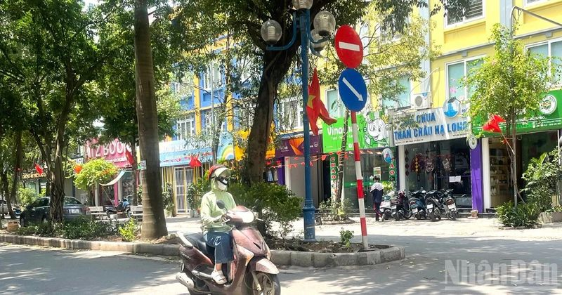
Thời tiết ngày 26/5: Nắng nóng tiếp diễn trên cả nước; Bắc Bộ, Trung Bộ nắng nóng đặc biệt gay gắt 🔗 MOI
Theo Trung tâm Dự báo khí tượng thủy văn quốc gia, khu vực Hà Nội ngày nắng nóng đặc biệt gay gắt, đêm không mưa. Thành phố Hồ Chí Minh ngày nắng, có nơi nắng nóng; chiều tối và đêm có mưa rào và dông
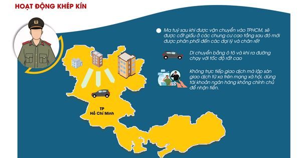
[Motion graphic] - Đường đi của ma túy trong đường dây "khủng" do Công an TPHCM triệt phá 🔗 MOI
Thời tiết ngày 26/5: Nắng nóng đặc biệt gay gắt bao trùm Bắc và Trung Bộ 🔗 MOI
Facebook Twitter Lưu bài viết Bản in Copy link Theo Trung tâm Dự báo Khí tượng Thủy văn Quốc gia, ngày 26/5, nhiều khu vực trên cả nước tiếp tục xuất hiện nắng nóng gay gắt đến đặc biệt gay gắt, với n
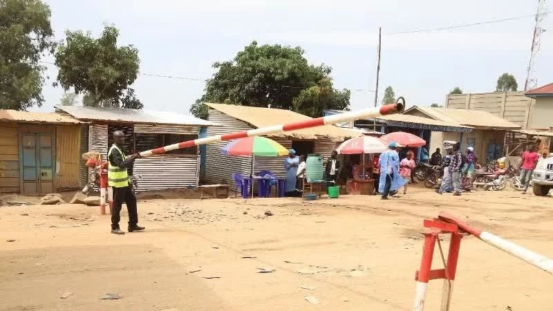
WHO nâng cảnh báo về dịch Ebola 🔗 MOI
Trong thông báo ngày 24/5, Tổng Giám đốc WHO Tedros Adhanom Ghebreyesus cho biết tại CHDC Congo, giới chức y tế đã ghi nhận hơn 900 ca nghi nhiễm Ebola, trong đó 101 ca được xác nhận dương tính. WHO n
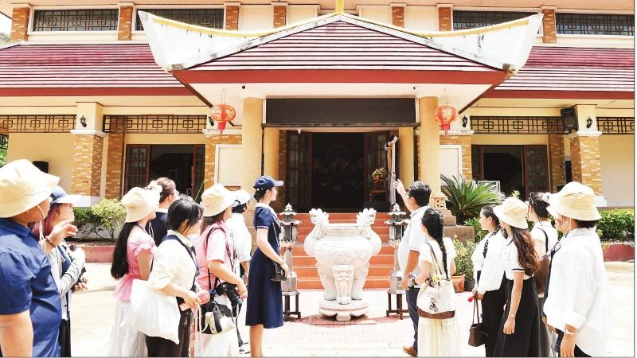
Nơi lưu giữ ký ức về Chủ tịch Hồ Chí Minh trên đất Thái Lan 🔗 MOI
Những ngày cuối tháng 5/2026, chúng tôi tìm về Khu di tích Chủ tịch Hồ Chí Minh tại tỉnh Udon Thani, gặp gỡ một số kiều bào tại địa phương này. Từ Quốc lộ 2263, rẽ vào đường Thầu Chín 1 và tiếp đó là
HLV Park Hang-seo nói gì khi chọn dẫn dắt đội bóng hạng Nhì Thái Lan? 🔗 MOI
HLV Park Hang-seo sẽ thử sức mình ở Thái Lan Sau khi viết nên trang sử vĩ đại cùng bóng đá Việt Nam, HLV Park Hang-seo đã chính thức bước vào một thử thách hoàn toàn mới tại Thái Lan. Ngày 25/5/2026,
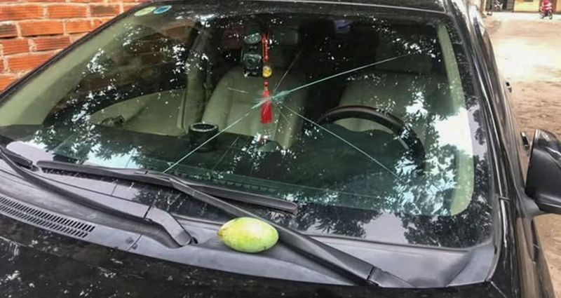
Chủ xe Audi mất oan 300 triệu vì đỗ xe tránh nắng, quả sa kê rơi trúng nóc kính 🔗 MOI
Tại nhiều tuyến phố, khu đô thị hay các bãi đỗ xe tự phát hiện nay, các loại cây ăn quả như xoài, sa kê, mít... được trồng khá phổ biến để tạo bóng mát. Cũng vì thế, nhiều chủ xe thường ưu tiên đỗ xe
Báo Pháp Luật TP. Hồ Chí Minh 🔗 MOI
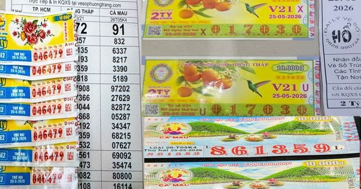
Sáng 26-5, lộ diện nơi trúng 3 giải độc đắc và 3 giải an ủi xổ số miền Nam 🔗 MOI
Sáng 26-5, sau khi kết quả xổ số miền Nam được công bố, các đại lý vé số đã tìm ra nhiều khách hàng ở TPHCM, Cà Mau và An Giang trúng 3 giải độc đắc và 3 giải an ủi vé số của 3 đài là TPHCM, Cà Mau và
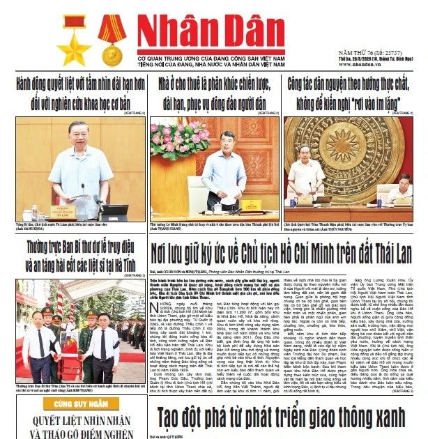
Báo Nhân Dân số 25757 🔗 MOI
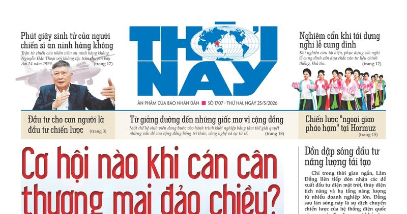
BÁO THỜI NAY SỐ 1707 🔗 MOI
Người phụ nữ loét thực quản do một thói quen khi ăn lẩu 🔗 MOI
Theo SCMP , người phụ nữ họ Vương kể, vào một ngày trời mát, cô đi ăn lẩu cùng bạn bè. Vì quá đói và mải trò chuyện, cô liên tục gắp đồ nhúng vào nồi lẩu và ăn ngay mà không chờ nguội. Ngay sau đó, ng
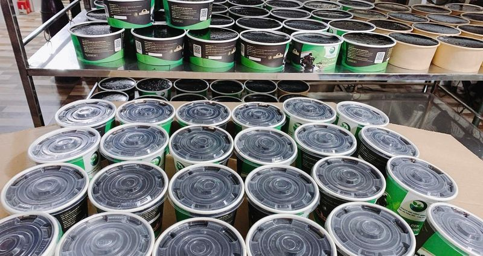
Đặc sản Lạng Sơn màu đen bóng, ăn mát bổ, khách Hà Nội đặt ship 220km về ăn 🔗 MOI
Ở Lạng Sơn, thạch đen (còn gọi là tiên nhân đông, sương sáo, lương phấn thảo, tiên thảo…) là loại cây trồng quen thuộc của người dân ở các xã thuộc địa phận huyện Tràng Định cũ như Đoàn Kết, Cao Minh,
Thiếu nữ diện cổ phục, áo yếm thả dáng bên hồ sen rộng 1 ha đẹp như tranh 🔗 MOI
Tháng 5 về, mùa sen Nha Trang (Khánh Hòa) bắt đầu vào độ đẹp nhất. Những đóa sen hồng bung nở rộ trên mặt hồ tại làng nghề Nha Trang Xưa (phường Nam Nha Trang), soi bóng xuống làn nước xanh mát, tỏa h
Thành ủy TPHCM phân cấp tuyển dụng công chức, viên chức 🔗 MOI
Theo quy định 820 của Thành ủy TPHCM vừa ban hành, lãnh đạo các cơ quan chuyên trách tham mưu, giúp việc Thành ủy; Ban Thường trực Ủy ban MTTQ Việt Nam TPHCM; Ban Thường vụ Đảng ủy cấp trên trực tiếp
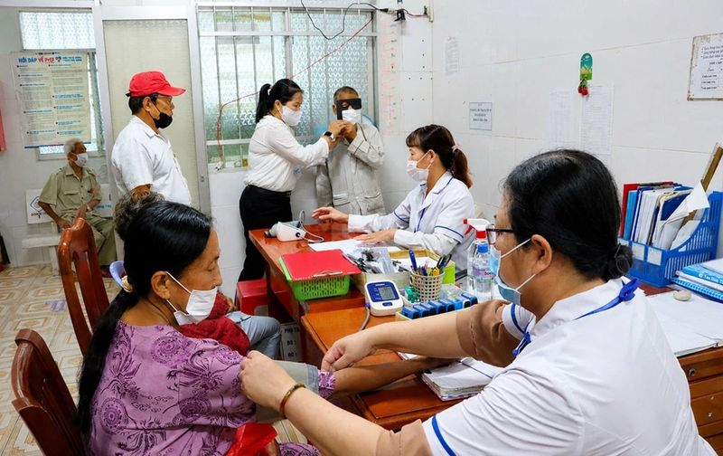
Đồng Tháp khám sức khỏe miễn phí cho 1,9 triệu người 🔗 MOI
Người dân được khám sức khoẻ miễn phí tại phường Cao Lãnh. Ảnh: V. Tiến Ngày 25/5, Tại Trung tâm Y tế Khu vực Cao Lãnh 1 và Trường Mầm non Tịnh Thới (phường Cao Lãnh), hàng trăm người cao tuổi, thương
Siết chặt phòng tuyến ngăn dịch Ebola 🔗 MOI
Dù Tổ chức Y tế thế giới (WHO) ban bố tình trạng khẩn cấp y tế toàn cầu do đợt bùng phát tại Congo (hơn 750 ca mắc, 177 ca tử vong tính đến 22-5), Ebola chưa lan rộng toàn thế giới. Bệnh có tỉ lệ tử v
[Video] Dự báo thời tiết ngày 26/5/2026: Nắng nóng gay gắt tiếp tục kéo dài trên cả nước 🔗 MOI
Khu vực Bắc Bộ trong hôm nay xuất hiện nắng mạnh ngay từ sáng sớm và kéo dài liên tục đến chiều muộn. Nắng nóng bao trùm trên diện rộng, nhiều nơi bước vào trạng thái nắng nóng gay gắt và đặc biệt gay
Jung Jiwon bứt tốc, Hoàng Anh tỏa sáng tại vòng mở màn AJGA IPS - Nam A Bank Cup 2026 🔗 MOI
VĐV Jung Jiwon. Ngày 25/5, vòng đấu mở màn của AJGA IPS - Nam A Bank Cup 2026 chính thức diễn ra tại Royal Long An Golf & Country Club, mở ra hành trình tranh tài sôi động của những tài năng golf trẻ
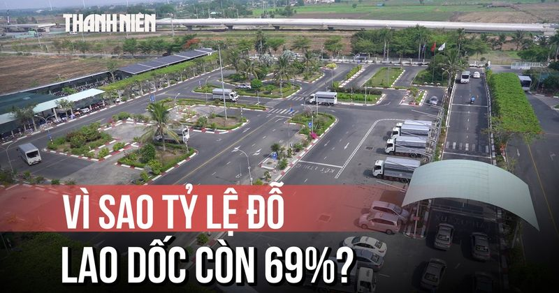
Sát hạch bằng lái: Lý do tỷ lệ đỗ đường trường giảm xuống 69%? 🔗 MOI
Mở ra ký ức âm nhạc của nhạc sĩ Thanh Tùng 🔗 MOI
Khi bà Bạch Dương, con gái của nhạc sĩ Thanh Tùng , ra lời muốn tìm những tư liệu âm nhạc xưa của ông, một kho báu bỗng nhiên ùa đến. Hơn 20 đĩa than, băng ghi hình của một nhà sưu tập… cho mượn. "Hơn
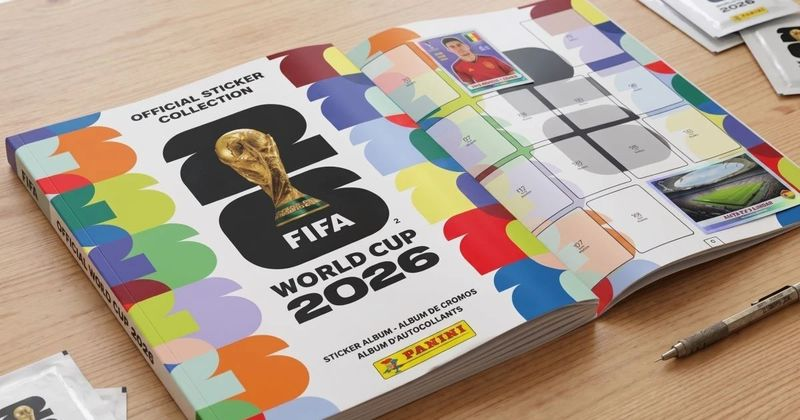
Giá vé World Cup tại Canada khiến nhiều người hâm mộ “choáng váng” 🔗 MOI
Facebook Twitter Lưu bài viết Bản in Copy link Theo phóng viên TTXVN tại Ottawa, nhiều người hâm mộ bóng đá cho biết họ choáng váng trước giá vé các trận đấu World Cup 2026 tại Canada trong bối cảnh c

Diện mạo mới khu tái định cư ở vị trí đắc địa của Hà Nội 🔗 MOI
Theo UBND phường Cầu Giấy, đến nay Dự án tái định cư N01 tại ô đất D17, khu đô thị mới Cầu Giấy nằm trên trục phố Trần Thái Tông - Duy Tân (Hà Nội), đã cơ bản hoàn thành các hạng mục xây dựng. Hệ thốn
Diễn biến mới về tình hình dịch Ebola 🔗 MOI
"Khi nỗ lực giám sát được tăng cường trong công tác ứng phó với dịch Ebola ở CHDC Congo, tính đến nay đã có hơn 900 trường hợp nghi nhiễm được xác định, trong đó có 101 ca được xác nhận", ông Tedros n

🔗 MOI
Đến điểm thi quá sớm dễ làm tăng tâm lý căng thẳng Trong đợt thi lớp 10 đầu tiên năm nay, theo ghi nhận ở 2 trường chuyên tại Hà Nội (Trường THPT Chuyên Khoa học Tự nhiên và Trường THPT Chuyên Khoa họ

4 nhóm người dễ bị đánh gục khi thời tiết nắng nóng 🔗 MOI
Ảnh hưởng nghiêm trọng tới tim mạch Theo Thạc sĩ, bác sĩ Huỳnh Thị Ngọc Huyền - Bệnh viện Tim Tâm Đức (TPHCM), một nghiên cứu cho thấy nguy cơ tử vong do bệnh tim mạch tăng đáng kể sau mỗi 1 độ C khi
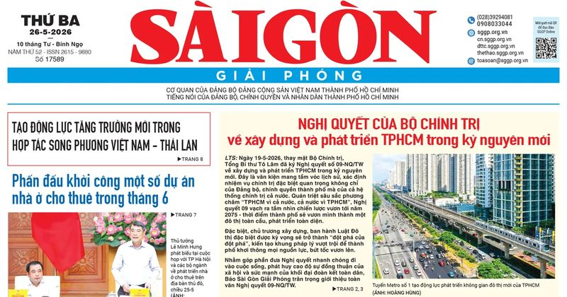
Báo Sài Gòn Giải Phóng ngày 26/5/2026 🔗 MOI
Vụ nam sinh lớp 8 bị bạo lực học đường: 'Không nghĩ con phải chịu áp lực tâm lý nặng nề đến thế' 🔗 MOI
Cần làm rõ trách nhiệm Liên quan đến vụ nam sinh Đ.M.H., học lớp 8 Trường THCS Nguyễn Du ở xã Di Linh tự tử nghi do bạo lực học đường , tối 25/5, trao đổi với phóng viên báo Tiền Phong , bà Trần Thị K
Việt Nam vào TOP 10 quốc gia sản xuất thép lớn nhất thế giới 🔗 MOI
Năm 2026, sản lượng thép thô của Hòa Phát dự kiến đạt trên 14 triệu tấn, tăng 30% so với năm 2025 Tháng 4/2026, Worldsteel ước tính sản lượng thép thô (phôi thép) của Việt Nam đạt 2,1 triệu tấn, tăng
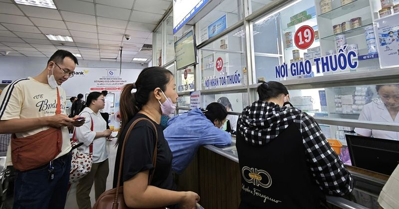
Bảo hiểm y tế và gánh nặng 'tự mua thuốc ngoài' 🔗 MOI
Bệnh nhân dù có bảo hiểm y tế (BHYT) nhưng vẫn phải bỏ tiền túi mua bên ngoài các loại thuốc thuộc danh mục được BHYT thanh toán lẫn thuốc ngoài danh mục là vấn đề nhức nhối kéo dài tại nhiều cơ sở y
Đề xuất nâng mức chi thăm hỏi, tặng quà với người có uy tín 🔗 MOI
Bộ Tư pháp vừa công bố hồ sơ dự thảo Nghị định của Chính phủ quy định tiêu chí lựa chọn, công nhận người có uy tín, chính sách đối với người có uy tín trong vùng đồng bào dân tộc thiểu số và chính sác
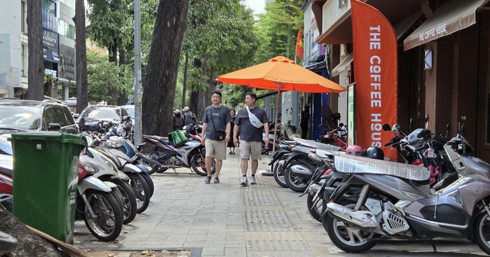
TP.HCM xử lý mạnh việc lấn chiếm vỉa hè 🔗 MOI
Báo cáo kết quả 3 tháng thực hiện, đại tá Nguyễn Đình Dương, Phó giám đốc Công an TP.HCM, cho biết qua điều tra cơ bản, toàn TP hiện có 1.742 điểm phức tạp về trật tự công cộng. Từ ngày 6.2 - 18.5, lự
Không để kiến nghị giám sát rơi vào im lặng 🔗 MOI
Phát biểu tại buổi làm việc, Chủ tịch Quốc hội (QH) nhấn mạnh, Ủy ban Dân nguyện và giám sát (Ủy ban) phải trở thành cơ quan tham mưu chiến lược, là nơi phát hiện sớm vấn đề, cảnh báo chính sách, điều
Dịch vụ cá độ, cờ bạc quảng cáo bằng đủ chiêu trò 🔗 MOI
Các trang này xâm phạm bản quyền phát sóng để thu lợi bất chính từ việc quảng cáo cho các trang mạng, dịch vụ trực tuyến về cá độ, cờ bạc bằng cách đưa các nội dung quảng cáo cờ bạc được chèn trực tiế

Dự báo thời tiết 26/5/2026: Nắng nóng 'đổ lửa' tiếp tục bao trùm miền Bắc, Trung Bộ 🔗 MOI
Theo Trung tâm Dự báo khí tượng thủy văn quốc gia, ngày 25/5, có tới 17 điểm có nhiệt độ cao trên 40 độ, tập trung tại các tỉnh, thành Phú Thọ, Bắc Ninh, Hà Nội, Thanh Hóa, Nghệ An, Hà Tĩnh, Quảng Trị
Làm sao để 'an cư lạc nghiệp'? 🔗 MOI
Từ xa xưa, ông cha ta đã coi việc có nơi ở ổn định là điều kiện để “lạc nghiệp”, tức là phát triển sự nghiệp và ổn định cuộc sống. Trong xã hội hiện đại, ý nghĩa ấy càng trở nên sâu sắc hơn khi đô thị

Tử vi ngày 26 tháng 5: Con giáp nào may mắn hôm nay? 🔗 MOI
Tuổi Tí trong tử vi ngày 26 tháng 5 có thể bắt đầu ngày mới bằng cảm giác hơi thiếu động lực. Tuy nhiên, chỉ cần bạn bắt tay vào việc đầu tiên, mọi thứ sẽ dần vào guồng. Một hành động nhỏ hôm nay có t
Cộng đồng Hồi giáo góp sức xây dựng TP HCM 🔗 MOI
Ngày 25-5, Đoàn công tác do Ủy viên Ban Thường vụ, Trưởng Ban Tuyên giáo và Dân vận Thành ủy TP HCM Dương Anh Đức làm Trưởng đoàn, đã đến thăm và chúc mừng Ban Đại diện Cộng đồng Hồi giáo TP HCM và Th
U17 Việt Nam hướng đến U17 World Cup: Thách thức từ khâu chuẩn bị 🔗 MOI
Chuẩn bị cho U17 World Cup Dù rơi vào bảng đấu không phải nặng nhất ở U17 World Cup, nhưng để thành công, HLV Roland và U17 Việt Nam bắt buộc phải có chuẩn bị kỹ lưỡng, đặc biệt nếu muốn tạo nên bất n
Hà Nội có thể chạm 42 độ, El Nino khiến mùa hè 2026 nắng nóng gay gắt hơn 🔗 MOI
Bắc Bộ và Trung Bộ đang trải qua đợt nắng nóng gay gắt diện rộng, trong đó, đồng bằng Bắc Bộ ghi nhận mức nhiệt cao nhất từ đầu mùa đến nay. TS. Hoàng Phúc Lâm, Phó Giám đốc Trung tâm Dự báo khí tượng
Pha 'ngả bàn đèn' của McTominay xuất hiện trên tiền Scotland 🔗 MOI
Mẫu thiết kế được phát hành để đánh dấu cột mốc tuyển Scotland giành vé dự World Cup nam lần đầu tiên kể từ năm 1998. Tờ tiền kết hợp các họa tiết truyền thống với khoảnh khắc McTominay tung cú móc bó
Triệu chứng ở tay, chân, răng cảnh báo loãng xương 🔗 MOI
Loãng xương là tình trạng mật độ xương giảm dần theo thời gian, khiến cấu trúc xương trở nên mỏng, giòn, làm hệ khung xương suy yếu, dễ tổn thương. Dưới đây là những dấu hiệu nhận biết tình trạng này.
Tiếp sức mùa thi 2026: Bộ học cụ giúp thí sinh thi cử nhẹ nhàng 🔗 MOI
Đồng hành cùng chương trình "Tiếp sức mùa thi 2026", Thiên Long giới thiệu loạt sản phẩm hướng đến nhu cầu thực tế của thí sinh, từ bút viết nhanh khô, bút chì tô trắc nghiệm đến máy tính khoa học phụ
Quy trình, thủ tục làm sổ đỏ đối với mua nhà giấy tay 🔗 MOI
Năm 2012, tôi mua một căn nhà ở quận 12 cũ, TP.HCM. Nhà này do chủ cũ mua thửa đất lớn, sau đó phân nền rồi xây thành nhiều căn liền kề sát nhau. Tất cả những căn nhà này, chúng tôi đều mua giấy tay v
Xuân Son khiến thầy Kim lo lắng 🔗 MOI
Chỉ ghi 2 bàn sau 6 trận Nhìn lại trận đấu giữa đội tuyển VN và Malaysia thuộc vòng loại cuối Asian Cup 2027 cuối tháng 3.2026, người hâm mộ chắc chắn vẫn chưa quên màn tỏa sáng của Nguyễn Xuân Son. C
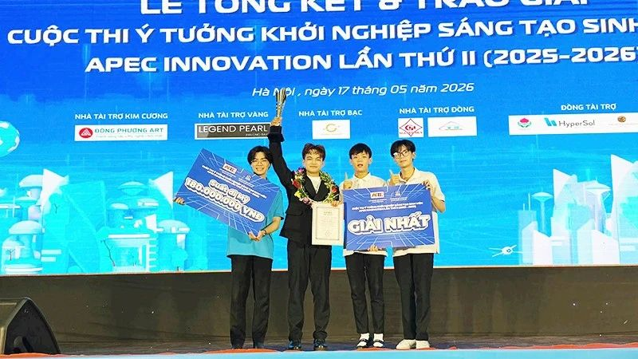
Từ giảng đường đến những giấc mơ vì cộng đồng 🔗 MOI
Chúng được khởi nguồn từ những quan sát đời thường: Một đứa trẻ khiếm thị loay hoay với vài cuốn sách chữ nổi cũ kỹ, những thân chuối bị bỏ lại sau mùa thu hoạch hay câu hỏi day dứt của người trẻ trướ
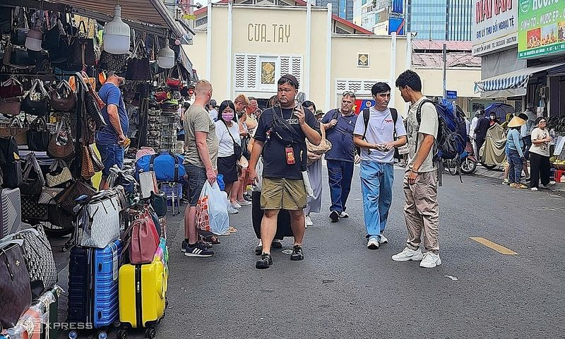
Đề xuất TP HCM sớm cho thuê vỉa hè kinh doanh 🔗 MOI
Kiến nghị được ông Nguyễn Xuân Thành, Phó chủ tịch UBND phường An Đông, nêu tại hội nghị sơ kết triển khai các giải pháp tăng cường quản lý trật tự đô thị, xây dựng xã, phường, đặc khu bảo đảm kỷ cươn

Google ra mắt Gemma 4, AI chạy offline trên thiết bị cá nhân 🔗 MOI
Gemma 4 chạy trực tiếp trên thiết bị cá nhân - Ảnh: THOMAS FULLER Trong bối cảnh trí tuệ nhân tạo vẫn phụ thuộc vào hạ tầng đám mây, việc một mô hình có thể hoạt động trực tiếp trên thiết bị cá nhân đ
Hồi sinh nghệ thuật truyền thống 🔗 MOI
Bắt nguồn từ bang Kelantan nhưng trải qua thời gian dài mai một, hiện nay di sản này đang được các thế hệ nghệ nhân tìm cách phục dựng và đưa trở lại đời sống đương đại. Theo Malaysiakini, với hơn 25
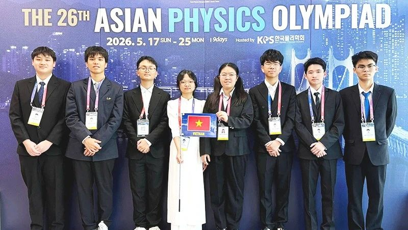
Kỳ thi Olympic Vật lý châu Á lần thứ 26 - APhO 2026, 🔗 MOI
Với kết quả này, Việt Nam nằm trong top 8 đoàn có kết quả cao nhất và thuộc nhóm 5 đoàn có tất cả học sinh dự thi đều đoạt huy chương cùng Hàn Quốc, Trung Quốc, Đài Loan (Trung Quốc) và Nga. Theo Bộ G
“Nghệ sĩ GenZ biết chủ động tìm kiếm khán giả” 🔗 MOI
Do đó hơn ai hết, nhạc sĩ sẽ phải là người thấu hiểu đặc trưng của từng thời kỳ ca nhạc. Và có thể lý giải vì sao GenZ ngày nay lại có lối đi riêng, khác biệt để vươn ra thị trường quốc tế. Nhạc sĩ ch
Ngày hội Sách tranh Thiếu nhi đầu tiên tại Việt Nam 🔗 MOI
Sự kiện do Slowbooks - đơn vị phát hành sách tranh chất lượng cao và điều phối mạng lưới nghệ sĩ SlowCircle tại Việt Nam - đăng cai tổ chức. Ngày hội sẽ có chuỗi hoạt động chuyên sâu và đa dạng nhằm m
Xanh, sạch, trải nghiệm đón hè 🔗 MOI
Sự kiện nóng cần điểm lại đầu tiên là tối thứ bảy (23/5) vừa qua diễn ra lễ bế mạc và trao giải cuộc thi tài năng diễn viên cải lương toàn quốc 2026, do Cục Nghệ thuật Biểu diễn phối hợp với Sở Văn hó
Tuần lễ thời trang quốc tế trở lại vào tháng 6 🔗 MOI
Môi Điên là thương hiệu đại diện cho sự tự do và tinh thần dám bước ra khỏi giới hạn sẽ mở màn cho đêm khai mạc. Sau 20 mùa tổ chức, AVIFW đã phần nào thành công trên hành trình tạo dựng bản sắc và kh

Triệu view, triệu lượt khách 🔗 MOI
Tại thời điểm đó, một loạt những clip, hình ảnh xuất hiện trên mạng ghi lại những hình ảnh du khách chật kín tại các điểm du lịch với những chú thích kiểu như “một nửa Việt Nam đang ở Huế” hay “trốn c

Thêm một phố đi bộ “chết yểu” 🔗 MOI
Nguyễn Đức Long (Phường Trường Vinh, tỉnh Nghệ An) Thí điểm từ năm 2022 và đi vào hoạt động năm 2023, phố đi bộ tại phường Trường Vinh từng được kỳ vọng trở thành điểm nhấn thúc đẩy kinh tế đêm của th
Lộ diện ứng viên số 1 thay Rosenior dẫn dắt Chelsea 🔗 MOI
Tối qua, Chelsea quyết định sa thải Rosenior chỉ 4 tháng sau khi bổ nhiệm cùng bản hợp đồng có thời hạn 6 năm rưỡi. Nhà cầm quân 41 tuổi được đưa về từ Strasbourg hồi đầu năm sau khi Enzo Maresca bị s
Nhận định bóng đá Betis vs Real Madrid: Hy vọng mong manh 🔗 MOI
Khoảng cách 9 điểm và phía trước chỉ còn 6 vòng đấu là thử thách rất lớn, hầu như không còn cơ hội để Real Madrid nghĩ đến chức vô địch La Liga . Trong lịch sử giải đấu, chưa bao giờ Real Madrid có th
Man City gây sốc chiêu mộ Enzo Fernandez 🔗 MOI
Tiền vệ người Argentina chuyển đến Chelsea với mức phí kỷ lục bóng đá Anh hồi 2023 là 105 triệu bảng. Nhưng ngày càng có nhiều đồn đoán rằng Enzo có thể rời Stamford Bridge sau mùa giải tồi tệ ở Chels
HLV Polking gia hạn hợp đồng với CAHN đến 2028 🔗 MOI
" CLB CAHN và HLV Mano Polking chính thức đặt bút ký vào bản gia hạn hợp đồng, cam kết tương lai tại đội bóng Thủ đô đến năm 2028. Sự tin tưởng và tầm nhìn dài hạn giữa Ban lãnh đạo CLB và HLV Polking
Hà Nội thắng Ninh Bình sau màn rượt đuổi siêu kịch tính 🔗 MOI
Cuộc thư hùng trên sân Ninh Bình, vòng 20 V-League 2025/26 diễn ra hấp dẫn ngay khi bóng lăn. Đội chủ nhà tạo sóng gió trước, nhưng Hà Nội mới là những người mở tỷ số. Những phút bù giờ hiệp 1 thực sự
U17 Việt Nam thắng tưng bừng Malaysia, vô địch Đông Nam Á 🔗 MOI
Highlights U17 Việt Nam 3-0 U17 Malaysia (nguồn: TV360) Xem trọn vẹn U17 Đông Nam Á (từ 11/4 đến 24/4) trên TV360 tại https://tv360.vn . Ngay sau tiếng còi khai cuộc, đoàn quân của HLV Cristiano Rolan
Real Madrid ngậm đắng nuốt cay: Mời Barca vô địch La Liga 🔗 MOI
Ngậm đắng nuốt cay Người Tây Ban Nha có câu thành ngữ nổi tiếng: “nuốt cóc và rắn” (tương tự “ngậm bồ hòn làm ngọt”). Đây chính là vấn đề mà Real Madrid đang trải qua trong giai đoạn cuối mùa giải 202
Chương trình nghệ thuật đặc biệt về hình tượng Chủ tịch Hồ Chí Minh 🔗 MOI
Bí thư Tỉnh ủy Phú Thọ Phạm Đại Dương và nhiều lãnh đạo tỉnh Phú Thọ tham dự chương trình. Tại buổi công diễn, Tiến sĩ Nguyễn Thị Tình, nguyên Giám đốc Bảo tàng Hồ Chí Minh cho biết, sinh thời Chủ tịc
Hạ Crystal Palace, Liverpool áp sát MU 🔗 MOI
Đội hình ra sân Liverpool: Woodman; Jones, Konate, Van Dijk, Robertson; Mac Allister, Szoboszlai, Salah, Wirtz, Gakpo, Isak. Crystal Palace: Henderson; Canvot, Richards, Lacroix; Munoz, Hughes, Kamada
Arsenal giành lại ngôi đầu Ngoại hạng Anh: Đừng vội mừng, Arteta 🔗 MOI
Trở lại ngôi đầu Arsenal giành chiến thắng để giành lại vị trí số 1 tại Premier League sau vòng 34. “Pháo thủ” đá hơn 1 trận so với Man City, đội bận đá bán kết FA Cup (thắng ngược 2-1 Southampton). M
Pep Guardiola lập kỷ lục mới, Man City chờ cú ăn 3 🔗 MOI
Man City chờ cú ăn 3 khác Điều đó đang có khả năng xảy ra. Một cú ăn 3 quốc nội khác của Man City được các nhà chuyên môn nhận định có tỷ lệ thành công rất cao. Ngay cả khi Man City đã thất bại trong
Pep rút ra chân lý chiến thắng khiến dàn sao Man City vui phơi phới 🔗 MOI
Man City vừa có chiến thắng ngược 2-1 Southampton, lấy vé chung kết FA Cup (gặp Chelsea). Tại Ngoại hạng Anh , dù tạm kém Arsenal 3 điểm, nhưng đoàn quân của Pep chơi ít hơn 1 trận. Pep bên Haaland sa
Bayern Munich đấu PSG: Ma thuật Jamal Musiala trở lại 🔗 MOI
Ma thuật trở lại Sau khi Bayern Munich thông báo Serge Gnabry sẽ phải nghỉ thi đấu một thời gian dài vì chấn thương, tân vương Bundesliga cũng nhanh chóng tìm thấy phiên bản tốt nhất ở Jamal Musiala.
Bán kết lượt đi Cúp C1, PSG đấu Bayern Munich: Nảy lửa ở Paris 🔗 MOI
Hai ông Vua ở các giải đấu quốc nội (Ligue 1 và Bundesliga) sẽ so tài nhau ở sân chơi châu lục, ai sẽ lấy vé chung kết Champions League , sau 2 cuộc quyết đấu gay cấn? Cả PSG và Bayern Munich đều có t
Newcastle vội cắt lỗ khi biết mua hớ tiền đạo 55 triệu bảng 🔗 MOI
Newcastle từng chi mạnh tay 55 triệu bảng để chiêu mộ cựu ngôi sao của Brentford, trong thương vụ được hoàn tất vào ngày cuối cùng của kỳ chuyển nhượng 2025. Yoane Wissa cùng Nick Woltemade được đưa v
Giải đấu cho phép VĐV dùng doping gây thất vọng 🔗 MOI
Enhanced Games 2026 diễn ra ngày 24/5 tại Resorts World Las Vegas. Ban tổ chức mô tả đây là sự kiện thể thao quốc tế đầu tiên nằm ở giao điểm giữa thể thao đỉnh cao và khoa học y học hiện đại, khẳng đ

5 ngày đếm ngược đến Triển lãm VietAd 2026 - Hà Nội 🔗 MOI
Triển lãm VietAd 2026 đem đến những trải nghiệm công nghệ cho khách tham quan. - Ảnh: Ban Tổ chức Nơi hội tụ công nghệ số và kết nối toàn cầu Với xu hướng tái cấu trúc mạnh mẽ của các chuỗi cung ứng c
Bác sĩ cảnh báo nguy cơ suy thận nghiêm trọng từ chứng cao huyết áp 🔗 MOI
Trong một bài đăng trên trang cá nhân hôm 21/5, bác sĩ Lâm Tuyên Nhân, chuyên gia thận học tại Đại học Á châu, ở thành phố Đài Trung, chia sẻ trường hợp một nữ bệnh nhân có tỷ lệ protein trên creatini
Bê bối cứu trợ rung chuyển Tây Ban Nha 🔗 MOI
Thông tin này đang gây chấn động chính trường Tây Ban Nha khi ông Zapatero là cựu Thủ tướng đầu tiên của nước này bị đặt trong diện điều tra hình sự. Theo quyết định của Tòa án Tối cao quốc gia Tây Ba
“Quỹ xúc tác” tiếp sức văn hóa, nghệ thuật 🔗 MOI
Mô hình này sẽ hoạt động như một quỹ đầu tư mạo hiểm để hỗ trợ các dự án sáng tạo, khởi nghiệp trong lĩnh vực văn hóa. Một số ý kiến đã chia sẻ với Thời Nay về vấn đề này. TS Nguyễn Huy Phòng (Hội đồn
HOSE công bố 67 mã cổ phiếu bị cắt margin tháng 5 🔗 MOI
TIN MỚI Sở Giao dịch Chứng khoán TP.HCM (HoSE) vừa thông báo danh sách bổ sung chứng khoán không đủ điều kiện giao dịch ký quỹ. Cụ thể, mã AAN của Công ty Cổ phần Lương thực A An chưa đủ điều kiện gia
U17 Việt Nam là vua Đông Nam Á: Viết trang sử mới 🔗 MOI
U17 Việt Nam viết nên một cột mốc lịch sử khi lần thứ 4 đăng quang giải U17 Đông Nam Á , qua đó trở thành đội tuyển giàu thành tích nhất giải đấu. Trước chiến công ở Indonesia 2026, “Những chiến binh
Lần đầu tiên Việt Nam lọt Top 10 cường quốc sản xuất thép lớn nhất thế giới, tỷ phú Trần Đình Long góp công lớn 🔗 MOI
HPG: Giá hiện tại Thay đổi Xem hồ sơ doanh nghiệp TIN MỚI Cụ thể, trong tháng 4/2026, Worldsteel ước tính sản lượng thép thô (phôi thép) của Việt Nam đạt 2,1 triệu tấn, tăng 4% so với cùng kỳ năm trướ
Người dân TP.HCM được khám sức khỏe, tầm soát miễn phí những bệnh nào? 🔗 MOI
Gửi bình luận Bình luận ( 0 ) Hiện chưa có bình luận nào, hãy là người đầu tiên bình luận Xem thêm bình luận

CMC OpenAI phát triển mô hình AI pháp lý tiếng Việt 🔗 MOI
Bộ chuẩn đánh giá VLegal - Bench của nhóm nghiên cứu C-OpenAI đăng ký trên cổng arXiv của Trường đại học Cornell - Mỹ phiên bản mới nhất cập nhật ngày 25-12-2025. CMC OpenAI , công t

Vì sao càng dùng điện thoại, bạn càng khó ngủ? 🔗 MOI
Ánh sáng xanh từ điện thoại khiến não bộ “tỉnh táo giả” vào ban đêm Mỗi tối, hàng triệu người cầm điện thoại lên giường với suy nghĩ chỉ lướt vài phút trước khi ngủ. Nhưng thực tế, chính ánh sáng phát
Đọc nhanh KTSG Bản in 🔗 MOI
Trang mà bạn đang truy cập không tồn tại! Để đọc tiếp, bạn có thể click vào các trang bên dưới:!
Nghiên cứu thị trường 🔗 MOI
9 tháng đầu năm 2025, CPI tăng 3,27%, lạm phát cơ bản tăng 3,19%, Cục Thống kê đánh giá lạm phát 'đang trong tầm kiểm soát'.
Câu chuyện thương trường 🔗 MOI
Các dự án tập trung vào các lĩnh vực công nghiệp, hạ tầng, xử lý rác thải, thiết bị y tế, vật tư sản xuất nông nghiệp, may mặc, thương mại, dịch vụ tổng hợp, chế biến nông sản.
Quán quân Trần Ngọc Ánh khuấy động sinh viên Học viện Hàng không Việt Nam 🔗 MOI
Hoa hậu Thí sinh Hoa hậu Việt Nam: Điều trân quý nhất là có được 'vé trưởng thành'
Bản tin thời tiết Hà Nội (26 - 27/5): Nóng đỉnh điểm tiếp tục duy trì 🔗 MOI
Nhịp sống Thủ đô Hà Nội nắng như rang giữa trưa, người dân chật vật di chuyển
Các nước đối phó dịch virus Ebola lan rộng 🔗 MOI
Không chủ quan với dịch bệnh Uganda đình chỉ toàn bộ hoạt động giao thông công cộng chở khách đến và đi từ CHDC Congo, nơi dịch Ebola đang hoành hành dữ dội. Trong thông báo, Bộ Y tế Uganda cho hay to
Trải nghiệm khám phá trong không gian xanh 🔗 MOI
Chạm sáng tạo này mong tạo không gian kết nối giữa Art - STEAM - cảm xúc - trải nghiệm cộng đồng, nơi trẻ em, học sinh, sinh viên và những người yêu sáng tạo được thể hiện bản thân thông qua nghệ thuậ

AirSnitch có thể chặn và theo dõi dữ liệu WiFi mà không cần mật khẩu 🔗 MOI
Nguy cơ nghe lén từ bên trong một mạng WiFi nội bộ - Ảnh: EZONE.HK Một kỹ thuật tấn công mới mang tên AirSnitch cho thấy WiFi có mật khẩu mạnh chưa chắc đã an toàn tuyệt đối. Dữ liệu người dùng vẫn có

ChatGPT giảm lỗi chữ méo, sai chính tả khi tạo ảnh 🔗 MOI
Giờ đây ChatGPT đã có thể tạo chữ trong ảnh chính xác hơn - Ảnh: REUTERS Trước đây, các công cụ AI tạo ảnh dù rất mạnh về hình ảnh nhưng lại gặp khó khăn khi xử lý chữ. Những lỗi như sai chính tả, biế

Code do AI viết nhanh hơn, nhưng lỗi nhiều gấp 1,7 lần con người 🔗 MOI
AI chuyển hóa từ ý tưởng sang sourcecode nhanh nhưng chưa tinh Nghiên cứu mới nhất từ CodeRabbit (một công cụ đánh giá mã nguồn phổ biến) chỉ ra rằng mã nguồn do AI tạo ra có tỉ lệ lỗi cao gấp 1,7 lần

ChatGPT cũng 'khoe' Wrapped, nhìn lại một năm bạn dùng AI 🔗 MOI
Cùng ChatGPT nhìn lại 1 năm đồng hành với tính năng Your Year with ChatGPT - Ảnh: OpenAI OpenAI vừa giới thiệu tính năng tổng kết năm cho người dùng ChatGPT , mang tên chính thức là 'Your Year

Tổng Bí thư, Chủ tịch nước Tô Lâm mong người Việt tại Sri Lanka phát huy bản sắc văn hóa dân tộc 🔗 MOI
Tổng Bí thư, Chủ tịch nước Tô Lâm gặp gỡ cán bộ cơ quan đại diện và cộng đồng người Việt Nam tại Sri Lanka - Ảnh: TTXVN Tại cuộc gặp, Tổng Bí thư, Chủ tịch nước Tô Lâm trò chuyện thân mật và thông báo
Chủng Ebola chưa có vaccine điều trị 🔗 MOI
Theo AP , đợt dịch lần này do chủng Bundibugyo gây ra, một trong những biến thể Ebola chưa có vaccine và thuốc điều trị đặc hiệu. Đến nay, WHO ghi nhận gần 750 ca nghi nhiễm và 177 trường hợp tử vong
Điều hối tiếc nhất 🔗 MOI
Ngay khi tiếp quản Man City mùa hè năm 2016, Pep cần thủ môn chơi chân tốt để phù hợp triết lý kiểm soát bóng. Hart, dù nổi tiếng giỏi phản xạ, chỉ là sự lựa chọn thứ ba sau Claudio Bravo và Willy Cab
Di sản của Pep 🔗 MOI
Ngay sau khi Pep thông báo chia tay, ban lãnh đạo Man City đã dành cho ông những sự tri ân trang trọng nhất. Họ quyết định đổi tên khán đài phía bắc (vừa được cải tạo mở rộng, nâng sức chứa cả sân lên
Phút giây sinh tử của người chiến sĩ an ninh hàng không 🔗 MOI
Đó là những phút giây kinh hoàng trên chiếc An-24 mang số hiệu 226 của Hãng hàng không Quốc gia Việt Nam vào ngày 7/2/1979. Một mình chống không tặc Trên chuyến bay có lộ trình Hà Nội - Đà Nẵng - Tân
[Video] Lễ viếng, truy điệu và an táng hài cốt liệt sĩ tại tỉnh Hà Tĩnh 🔗 MOI
Đại diện Thủ đô Vientiane và tỉnh Bolikhamxay của nước Cộng hòa Dân chủ Nhân dân Lào sang dự lễ. Trong không khí trang nghiêm, thiêng liêng và xúc động, các đại biểu thành kính dâng hoa, thắp hương và
[Video] Hội nghị báo cáo viên Trung ương tháng 6 🔗 MOI
Tại hội nghị, các đại biểu đã được thông tin về 3 chuyên đề lớn. Thứ nhất là chuyên đề về những nội dung cốt lõi của Luật Thủ đô năm 2026. Với 9 chương, 36 điều, Luật Thủ đô 2026 đã điều chỉnh một các
Ta sẽ khác đi, khi đọc Haruki Murakami 🔗 MOI
Mỗi lát cắt được đóng khung bởi những “con mắt đơn”, khi những lát cắt ấy càng nhiều thêm, chúng vấn vít vào nhau sẽ trở thành “con mắt kép” - vòng lặp này lại mang đến những câu chuyện thôi thúc tác
Nghiêm cẩn khi tái dựng nghi lễ cung đình 🔗 MOI
Định hướng làm sáng rõ “hồn cốt” lịch sử - văn hóa Hoàng thành Thăng Long là nơi diễn ra các nghi lễ quan trọng nhất của triều đình: Vua đăng quang, định niên hiệu, phong chức/tước, nhường ngôi, lễ Tế

Sống đời phu cơm 🔗 MOI
Ở phố bây giờ, nợ có thể khất, lời hứa có thể để sang tuần sau tính, nhưng đói thì phải giải quyết ngay. Cơn đói của thị dân hiện đại không có phẩm hạnh chờ đợi. Nó nhấn nút, đặt món, thêm tương ớt, b
Nhận định bóng đá Barca vs Celta Vigo: Chủ nhà trút giận 🔗 MOI
Một tuần sau khi bị Atletico Madrid loại khỏi Champions League, Hansi Flick đã thoải mái hơn nhưng chưa quên được giấc mơ châu Âu còn dang dở. “Champions League là giấc mơ lớn đối với tôi ” , Flick lê
Chelsea kém nhất sau 1 thế kỷ: Cái giá của đối xử tệ và đổ lỗi 🔗 MOI
Liam Rosenior thừa nhận vừa trải qua “đêm khó khăn nhất” , khi Chelsea dưới sự dẫn dắt của ông phải nhận thất bại thảm hại 0-3 trước Brighton, trong khuôn khổ vòng 34 Ngoại hạng Anh . Một cuộc chiến v
Real Madrid thắng trong la ó: Không thể tha thứ cho các triệu phú 🔗 MOI
Màn trình diễn kém Real Madrid cần một màn trình diễn đẳng cấp, nhưng kết quả lại là sự thiếu nhiệt huyết trong cuộc tiếp đón Alaves – đội đang chật vật trong cuộc đua trụ hạng. Trong thời gian bù giờ
Tin tức về chuyển nhượng 22/4: MU tranh Alex Scott, Liverpool ký Leao 🔗 MOI
MU quyết tranh Alex Scott Alex Scott đang nổi lên như một trong những tiền vệ tài năng nhất Ngoại hạng Anh, dưới sự huấn luyện của HLV Andoni Iraola ở Bournemouth. Gần đây, có tin Chelsea quan tâm đến
U17 Việt Nam ngược dòng hạ U17 Australia, vào chung kết Đông Nam Á 🔗 MOI
Highlights U17 Việt Nam 2-1 U17 Australia (nguồn: TV360) Xem trọn vẹn U17 Đông Nam Á (từ 11/4 đến 24/4) trên TV360 tại https://tv360.vn . U17 Việt Nam đã tạo nên chiến thắng đầy cảm xúc trước U17 Aust

Giữ sông lớn như phần tự nhiên của đô thị 🔗 MOI
Sông Hương “nuôi” mảng xanh chạy dài đôi bờ, đan xen, che phủ cho những khối kiến trúc thấp, giúp giảm đi cái nắng gay gắt của miền trung, làm nền cho các thắng cảnh, tạo cảnh quan đẹp cho thành phố v
Báo Indonesia ấn tượng U17 Việt Nam ngược dòng hạ U17 Australia 🔗 MOI
Tối 22/4, trên sân Gelora Delta, ở Sidoarjo (Indonesia), bất chấp việc trọng tài Yusuke Ohashi “bẻ còi” sau tình huống VAR tranh cãi, U17 Việt Nam vẫn ngược dòng đánh bại U17 Australia trong trận bán
Man City lên đầu bảng, Pep và Haaland ‘song kiếm hợp bích’ cực hay 🔗 MOI
Trên sân của Burnley, Man City làm vừa đủ (thắng 1-0) ở trận đấu bù để có thêm 3 điểm quan trọng, chính thức đưa họ vượt lên trên Arsenal, dẫn đầu bảng Premier League , sau 33 vòng đấu. Haaland ghi bà
Sống lệch chuẩn sau ánh hào quang 🔗 MOI
Khi những "thần tượng" trở nên lạc lõng Dư luận đặc biệt xôn xao trước thông tin ca sĩ Miu Lê bị cơ quan chức năng phát hiện cùng nhóm bạn sử dụng trái phép chất ma túy tại khu vực Cát Bà, Hải Phòng.
Man City vượt Arsenal dẫn đầu Premier League: Đẳng cấp là đây 🔗 MOI
Chỉ 1 bàn là đủ Đội bóng của Pep Guardiola đã tung đòn quyết định khi thắng Burnley 1-0, trong trận đấu mà họ vượt trội trước đội chủ nhà gần như buông xuôi trong cuộc chiến trụ hạng. Arsenal giữ ngôi
Đánh thức hương chè cổ giữa ngàn mây Tả Củ Tỷ 🔗 MOI
Những gốc cây xù xì, rêu phong đứng hiên ngang giữa gió rít và giá rét như chính cốt cách của người Dao nơi đây. Và chàng thanh niên người Dao Lý Văn Minh đã mang đến cho cây chè ấy một cuộc phục sinh
Người phụ nữ Pác Bó được đặt tên theo tên quê hương Bác Hồ 🔗 MOI
Từ bức tranh “Ông Ké Kách mệnh về Pác Bó năm 1941” Tháng 8/2025, cụ Lê Phú người đại đội trưởng đầu tiên Đại đội Ký Con (tiền thân của Trung đoàn 66 - Sư đoàn 304 hiện nay) chuyển cho tôi một số tư li
Tin tức về chuyển nhượng 23/4: MU mua Arda Guler, Chelsea lấy Diomande 🔗 MOI
MU ấp ủ tham vọng lấy Guler Arda Guler có mùa giải khá nổi bật với những bước tiến mạnh mẽ, bất chấp sự bất ổn của Real Madrid, và trở thành mục tiêu của MU trong kỳ chuyển nhượng mùa hè. Real Madrid
Lamine Yamal nghỉ hết mùa: Nỗi lo tái phát ở World Cup 2026 🔗 MOI
Tạm biệt mùa giải Barcelona thở dài. LĐBĐ Hoàng gia Tây Ban Nha (REFE) thở phào. Đó là phản ứng trái ngược của các bên khi có kết quả xét nghiệm về tình trạng chấn thương mà Lamine Yamal gặp phải.
Tài sản Cole Palmer tăng gấp 3 lần dù phong độ sa sút 🔗 MOI
Cole Palmer cùng đội bóng thành London đang gặp rất nhiều khó khăn trên sân cỏ. Mới nhất, HLV Liam Rosenior bị sa thải sau 4 tháng nắm quyền. Cá nhân Palmer thường xuyên vật lộn với các chấn thương kh
Tin tức về chuyển nhượng 24/4: MU ký Van de Ven, Barca lấy Lisandro 🔗 MOI
MU chiêu mộ Van de Ven MU đang chuẩn bị cho mùa giải trở lại cúp châu Âu, nhiều khả năng là Champions League, bằng bản hợp đồng “bom tấn” Micky van de Ven. Kế hoạch của MU là làm mới hàng thủ, với Van
Báo Indonesia: U17 Việt Nam trên đỉnh Đông Nam Á 🔗 MOI
Không có bất ngờ nào diễn ra, khi U17 Việt Nam biến sân Gelora Delta thành sân khấu của riêng mình để nâng cao chiếc cúp vô địch U17 Đông Nam Á 2026 . Thầy trò HLV Cristiano Roland kiểm soát hoàn toàn
Nhận định bóng đá Getafe vs Barca: Chạm vào ngôi vương 🔗 MOI
Chưa thi đấu, nhưng con đường đến với chức vô địch La Liga 2025/26 của Barcelona đã ít hơn một chướng ngại vật, khi Real Madrid hòa 1-1 trên sân Betis. Hector Bellerin là người cũ Barca, và anh vừa dà
Nhận định Arsenal vs Newcastle: Pháo thủ tìm lại niềm vui 🔗 MOI
Đội bóng của Pep Guardiola không dẫn đầu Premier League kể từ tháng 8 năm ngoái. Nhưng chỉ cần tháng tư đầy ấn tượng, Man City lập tức đẩy Arsenal vào thế khó khăn. Sau thất bại bất ngờ 1-2 trước Bour
Thói quen buổi sáng đơn giản có thể giúp giảm tần suất đau nửa đầu 🔗 MOI
Ngoài việc dùng thuốc khi cơn đau xuất hiện, duy trì thói quen sinh hoạt phù hợp vào buổi sáng cũng giúp giảm tần suất đau đầu, theo trang OnlyMyHealth (Ấn Độ). Theo ông GP Dureja, thành viên Hội đồng
Tin tức về chuyển nhượng 25/4: MU ký Lewandowski, Liverpool chốt Barcola 🔗 MOI
MU đàm phán Lewandowski MU đang hướng đến thị trường chuyển nhượng mùa hè với quyết tâm lấy lại vị thế gã khổng lồ của bóng đá Anh, cũng như ở châu Âu. mình cả ở Anh và trên lục địa. Theo những thông
Gia đình công bố nhiều tư liệu quý về nhạc sĩ Thanh Tùng 🔗 MOI
Lời hứa không đi bước nữa Chiều 25/5, tại Hà Nội, gia đình nhạc sĩ Thanh Tùng tổ chức triển lãm Legacy of love, tưởng niệm 10 năm ngày mất của nhạc sĩ. Hành trình thực hiện triển lãm, sưu tầm, phục ch
Tin tức về chuyển nhượng 27/4: MU chốt Ederson, PSG lấy Saliba 🔗 MOI
MU chốt vụ Ederson Các quan chức MU quyết định lựa chọn Ederson như mục tiêu hàng đầu để thay thế Casemiro trong mùa giải mới 2027/27. Theo The Guardian, đích thân Giám đốc bóng đá Jason Wilcox lựa ch
MU đánh bại Brentford, tiến gần tấm vé dự Champions League 🔗 MOI
MU nhập cuộc nhanh và Amad suýt mở tỷ số sớm Phút 11, sau tình huống dàn xếp phạt góc, Casemiro đánh đầu cận thành mở tỷ số Tiền vệ người Brazil cho thấy giá trị kinh nghiệm Sau khi bị dẫn bàn, Brentf
'Hachiko, chú chó đợi chờ' - khúc ca về lòng trung thành 🔗 MOI
Có một nhà văn từng nói: ''Chờ đợi luôn là một điều lâu dài và đau khổ''. Nhưng nếu sự chờ đợi ấy được thắp lên bằng ngọn lửa của tình yêu thuần khiết, liệu nó có còn là nỗi đau? Bạn biết không, 10 nă
Dấu hiệu ngứa da có thể cảnh báo suy thận 🔗 MOI
Suy thận xảy ra khi chức năng thận giảm xuống dưới 15% so với bình thường. Tình trạng này thường là kết quả của quá trình suy giảm chức năng kéo dài. Nhiều người không biết mình mắc bệnh cho đến khi t
Nỗ lực sinh tồn cứu thiếu nữ khỏi tên sát nhân hàng loạt 🔗 MOI
Khoảng 5h ngày 14/6/1983, Cindy bị Robert còng tay, đưa đến sân bay Merrill Field ở Anchorage, chuẩn bị đến vùng hoang dã Alaska. Hắn dừng xe, bảo cô đừng cử động nếu không sẽ phải chết. Sau khi Rober
Việt Nam từ chối làm "gã bốc vác" số 1 châu Á 🔗 MOI
MU thắng nghẹt thở Brentford: Nước mắt Casemiro 🔗 MOI
“Sát thủ” không chiến Casemiro muốn chia tay Old Trafford theo cách trọn vẹn nhất và giúp đội bóng giành một suất dự Champions League mùa tới. Cầu thủ người Brazil đang trên đường hoàn tất một trong n
Chelsea mời Xabi Alonso về ngồi 'ghế nóng' 🔗 MOI
Marco Silva và Xabi Alonso vừa được thêm vào danh sách rút gọn, sau khi phía Chelsea bày tỏ sự quan tâm đến Andoni Iraola của Bournemouth hồi tuần trước. Iraola đã xác nhận sẽ rời Bournemouth vào cuối
Hàng quán Hà Nội thập niên 1980-1990 qua ống kính 🔗 MOI
Nhiếp ảnh gia Hà Lan Ab Stokvis chụp một cửa hàng bán trứng vịt lộn vào những năm 1980. Chiếc ghế gỗ dài, tấm trải bàn với họa tiết hoa là những hình ảnh quen thuộc trong sinh hoạt, buôn bán của mọi n
Fernandes: 'Roy Keane nói không đúng sự thật về tôi' 🔗 MOI
Trên chương trình Stick To Football hôm 19/5, Keane chỉ trích Fernandes và các cầu thủ Man Utd quá tập trung vào việc giúp tiền vệ người Bồ Đào Nha phá kỷ lục kiến tạo Ngoại hạng Anh, thay vì ưu tiên

Siri có thể tích hợp ChatGPT, Gemini trên iOS 27 🔗 MOI
Người dùng có thể sớm được tự do lựa chọn "bộ não" AI cho Siri ngay trên giao diện iOS 27 Apple đang thử nghiệm một thay đổi đáng chú ý với Siri, khi cân nhắc cho phép tích hợp các mô hình AI bên ngoà

Những điểm check-in ở Nha Trang 'nổi rần rần trên mạng' 🔗 MOI
Bờ kè xóm Chụt đặc biệt thu hút giới trẻ đến check-in trong thời gian gần đây - Ảnh: TRẦN HOÀI Bên cạnh những điểm đến, các khu du lịch vốn đã nổi tiếng, nhiều điểm check-in miễn phí hoặc với chi phí

Mất hộ chiếu, có khi mắc kẹt cả tháng ở nước ngoài 🔗 MOI
Khi du lịch, cần bảo quản hộ chiếu, thẻ và tiền mặt ở các túi bao tử đeo bên mình, liên tục kiểm tra để hành trình luôn suôn sẻ - Ảnh: Matador Network Từ những câu chuyện thực tế, các hướng dẫn viên d

Indonesia siết quản lý Roblox, buộc xác minh độ tuổi bằng khuôn mặt 🔗 MOI
Trẻ dưới 16 tuổi chơi Roblox ở Indonesia phải quét khuôn mặt xác minh độ tuổi - Ảnh: REUTERS Bà Nicky Jackson Colaco - Phó chủ tịch kiêm Giám đốc chính sách công toàn cầu của Roblox - cho biết công ty

Tuyên án tù chung thân đối với Đào Minh Quân về tội khủng bố, hoạt động nhằm lật đổ chính quyền 🔗 MOI
Tuyên án tù chung thân đối với Đào Minh Quân về tội khủng bố, hoạt động nhằm lật đổ chính quyền nhân dân - Ảnh: TTXVN Bị cáo Đào Minh Quân - đối tượng cầm đầu tổ chức "Chính phủ quốc gia Việt Nam lâm

Xã miền núi thu 46 tỉ từ YouTube, TikTok, Facebook 🔗 MOI
Phiên chợ số bán sản phẩm địa phương ở Lâm Bình - Ảnh: CÔNG ĐẠI Ngày 2-5, lãnh đạo UBND xã Lâm Bình (tỉnh Tuyên Quang) cho biết UBND xã vừa công bố đề án xây dựng thí điểm "Làng sáng tạo nội dung số g
'Honda CR-V lắp ráp trong nước không kém cạnh xe nhập' 🔗 MOI
Honda CR-V e:HEV RS được lắp ráp tại nhà máy ở Việt Nam - Ảnh: AP Team Honda CR-V e:HEV RS sản xuất tại Việt Nam hiện là một trong những mẫu xe nhận được nhiều sự chú ý, không chỉ nhờ hệ truyền động h

Giải mã hiện tượng du khách đổ đến Huế, Đà Nẵng 🔗 MOI
Khu vực đôi bờ sông Hàn (Đà Nẵng) đông nghẹt người vào cao điểm giỗ Tổ Hùng Vương - Ảnh: B.D. Hình ảnh hàng ngàn người ken đặc, chen nhau đi qua Ngọ Môn để tham quan Đại Nội Huế về đêm trở thành khoản

HLV Philippe Troussier: U22 Việt Nam có sức ép 🔗 MOI
Tiền vệ Công Đến (giữa) trên sân tập tại Campuchia chiều 26-4 - Ảnh: N.K. "Chúng tôi có sức ép về mục tiêu tại SEA Games . Chúng tôi có sức ép phải chơi thứ bóng đá tốt nhất của mình.

Xem video siêu phẩm từ giữa sân của Chanathip vào lưới Công An Hà Nội 🔗 MOI
Video Chanathip lập siêu phẩm vào lưới Công An Hà Nội - Nguồn: FPT Play Ở trận đấu này, CLB Công An Hà Nội đã sớm có bàn thắng dẫn trước ở phút 20 nhờ công của Alan. Sau đó, đại diện bóng đá Việt Nam

Mùng 3 Tết, Lễ hội xuân Cần Giờ tại Vinhomes Green Paradise đông vui vượt mong đợi 🔗 MOI
Gian hàng ông đồ thu hút nhiều người đến xin chữ đầu năm - Ảnh: VĨNH SƯƠNG Chị Hằng, một cư dân sống ở Cần Giờ (TP.HCM) nhiều năm, chia sẻ chị không nghĩ Lễ hội xuân Cần Giờ lại đông vui đến vậy. “Lễ

Ngoại tình bị phạt tiền: có làm người ta chung thủy hơn? 🔗 MOI
Minh họa: ĐẶNG HỒNG QUÂN H. - người em thân thiết - nói với tôi rằng: "Có những buổi tối mình không sợ cô đơn, mà sợ con mình hỏi: ba đâu?". Đó không phải chỉ là một câu hỏi, mà là một vết xước lặp đi

Sài Gòn hồi mới vào trong di cảo Bùi Giáng 🔗 MOI

Quán cà phê Việt đầu tiên ở Sài Gòn và cuộc tranh thương đầu thế kỷ 20 🔗 MOI
Ký tên lên áo đồng phục cuối cấp là ký ức đẹp hay sự lãng phí? 🔗 MOI
Lưu lại chữ ký trên chiếc áo đồng phục ngày chia tay tuổi học trò - Ảnh tư liệu Những ngày cuối tháng 5, nhiều sân trường lại rộn ràng cảnh học sinh chuyền tay nhau ký áo. Có em viết lời chúc thi tốt,